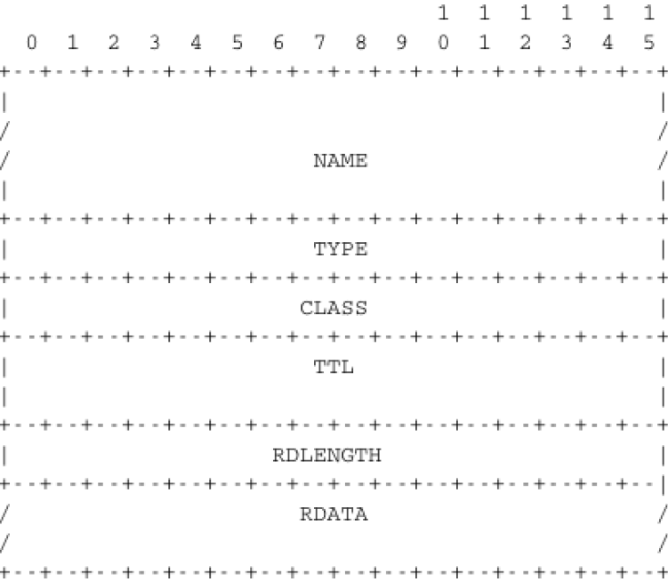

Ce manuel est né d'une frustration de son auteur principal. De nombreux auteurs ont choisi d'écrire un manuel parce qu'il n'y a pas de manuels dans leur domaine ou parce qu'ils ne sont pas satisfaits des manuels existants. Cette frustration a produit plusieurs excellents manuels dans la communauté des réseaux. À une époque où les manuels de réseaux étaient principalement théoriques, Douglas Corner a choisi d'écrire un manuel entièrement axé sur la suite de protocoles TCP/IP [Comer1988], un choix difficile à l'époque. Plus tard, il a étendu son manuel en décrivant une implémentation complète de TCP/IP, ajoutent des considérations pratiques aux descriptions théoriques de [Comer1988]. Richard Stevens a abordé Internet comme un explorateur et a expliqué le fonctionnement des protocoles en examinant tous les paquets échangés sur le fil [Stevens1994]. Jim Kurose et Keith Ross ont réinventé les manuels de réseaux en partant des applications utilisées par les étudiants et ont ensuite expliqué les protocoles Internet en supprimant une couche après l'autre [KuroseRoss09].
Les frustrations qui ont motivé ce livre sont différentes. Lorsque j'ai commencé à enseigner les réseaux à la fin des années 1990, les étudiants étaient déno des utilisateurs d'Internet, mais leur utilisation était limitée. Les étudiants utilisaient encore des manuels de référence et passaient du temps à la bibliothèques. Les étudiants d'aujourd'hui sont complètement différents. Ce sont des utilisateurs du web avides et expérimentés qui trouvent beaucoup d'informations sur le web. C'est une attitude positive car ils sont probablement plus curieux que leurs prédécesseurs. Grâce aux informations disponibles sur Internet, ils peuvent vérifier ou obtenir des informations supplémentaires sur les sujets expliqués par leurs professeurs. Cette abondance d'informations crée plusieurs défis pour un enseignant. Jusqu'à la fin du XIXe siècle, un enseignant par définition plus compétent que ses étudiants et il était très difficile pour les étudiants de vérifier les leçons données par leurs enseignants. Aujourd'hui, étant donné la quantité d'informations disponibles au bout des doigts de chaque étudiant via Internet, la vérification d'une leçon ou l'obtention de plus d'informations sur un sujet donné est parfois à quelques clics seulement. Des sites web tels que Wikipédia fournissent beaucoup d'informations sur divers sujets et les étudiants les consultent souvent. Malheureusement, l'organisation des informations sur ces sites web n'est pas adaptée pour permettre aux étudiants d'apprendre à partir d'eux. De plus, il existe de grandes différences dans la qualité et la profondeur des informations disponibles pour différents sujets.
La deuxième raison est que la communauté du réseau informatique est un participant fort dans le mouvement open-source. Aujourd'hui, il existe des implémentations open-source de haute qualité et largement utilisées pour la plupart des protocoles réseau. Cela inclut les implémentations TCP/IP qui font partie de Linux, FreeBSD ou la pile uIP fonctionnant sur des contrôleurs 8 bits, mais aussi des serveurs tels que Bind, Unbound, Apache ou Sendmail, ainsi que des implémentations de procoles de routage tels que XORP ou Quagga. De plus, les documents qui définissent presque tous les protocoles Internet ont été développés au sein de l'Internet Engineering Task Force (IETF) en utilisant un processus ouvert. L'IETF publie ses spécifications de protocole dans les RFC disponibles publiquement et les nouvelles propositions sont décrites dans les projets Internet.
Cet ouvrage pédagogique vise à combler le fossé entre les implémentations open source et les spécifications open source des réseaux en fournissant un description détaillée mais pédagogique des principes clés qui guident le fonctionnement d'Internet. Le livre est publié sous une licence Creative Commons. Cette licence open source est motivée par deux raisons. La première est que nous espérons que cela permettra à de nombreux étudiants d'utiliser le livre pour apprendre les réseaux informatiques. La seconde est que j'espère que d'autres enseignants le réutiliseront, l'adapteront et l'amélioreront. Le temps dira s'il est possible de construire une communauté de contributeurs pour améliorer et développer davantage le livre. En tant que point de départ, la première édition contient tout le matériel pour un semestre de premier cycle supérieur ou de cours de réseau des cycles supérieurs.
À l'heure actuelle où ces lignes sont écrites, la plupart du texte a été rédigé par Olivier Bonaventure. Laurent Vanbever, Virginie Van den Schriek, Damien Saucez et Mickael Hoerdt ont contribué aux exercices. Pierre Reinbold a conçu les icônes utilisées pour représenter les commutateurs et Nipaul Long a redessiné de nombreuses figures au format SVG. Stéphane Bortzmeyer a envoyé de nombreuses suggestions et corrections au texte. Des informations supplémentaires sur le manuel sont disponsibles sur le site http://inl.info.ucl.ac.be/CNP3.
1.1. À propos de l'auteur :
Olivier Bonaventure est actuellement professeur à l'Univesité Catholique de Louvain (Belgique) où il dirige le laboratoire IP Networking et est vice-président de l'ICTEAM Institute. Sa recherche est axée sur les protocoles Internet depuis plus de vingt ans. Avec ses doctorants, il a développé des techniques d'ingénierie de trafic, effectué divers types de mesures Internet, amélioré les performances des protocoles de routage tels que BGP est IS-IS et participé au développement de nouveaux protocoles Internet, notamment shim6, LISP et Multipath TCP. Il contribue fréquemment à la normalisation au sein de l'IETF. Il était membre du commité de rédaction de la revue IEEE/ACM Transactions on Networking et est directeur de ACM SIGCOMM.
Chapitre 2 : Introduction :
2.1. Introduction :
Lorsque les premiers ordinateurs ont été construits pendant la Seconde Guerre mondiale, ils étaient coûteux et isolés. Cependant, après environ 20 ans, à mesure que leurs prix diminuaient progressivement, les premières expériences ont commencé à connecter des ordinateurs entre eux. Au début des années 1960, des chercheurs tels que Paul Baran, Donald Davies ou Joseph Licklider ont publié indépendamment les premiers articles décrivant l'idée de construire des réseaux informatiques [Baran] [Licklider1963]. Étant donné le coût des ordinateurs, le partage sur une longue distance était une idée intéressante. Aux États-Unis, l'ARPANET a démarré en 1960 et s'est poursuivi jusqu'au milieu des années 1980 [LCCD09]. En France, Louis Pouzin a développé le réseau Cyclades [Pouzin1975]. De nombreux autres réseaux de recherche ont été construits au cours des années 1970 [Moore]. En même temps, l'industrie des télécommunications et des ordinateurs s'est intéressée aux réseaux informatiques. L'industrie des télécommunications a misé sur le X25. L'industrie informatique a adopté une approche complètement différente en concevant des réseaux locaux (LAN). De nombreuses technologies LAN telles qu'Ethernet ou Token Ring ont été conçues à cette époque. Au cours des années 1980, la nécessité d'interconnecter de plus en plus d'ordinateurs a conduit la plupart des vendeurs d'ordinateurs à développer leur propre suite de protocoles de réseau. Xerox a développé [XNS], DEC a choisi DECNet [Malamud1991], IBM a développé SNA [McFadyen1976], Microsoft a introduit NetBIOS [Winston2003], Apple a misé sur Appletalk [SAO1990]. Dans la communauté de recherche, l'ARPANET a été mise hors service et remplacée par TCP/IP [LCCD09] et l'implémentation de référence a été développée à l'intérieur de BSD Unix [McKusick1999]. Les universités qui utilisaient déjà Unix ont ainsi pu adopter facilement TCP/IP et les vendeurs de stations de travail Unix tels que Sun ou Silicon Graphics ont inclus TCP/IP dans leur variante d'Unix. En parallèle, l'ISO, avec le soutien des gouvernements, a travaillé sur le développement d'une suite ouverte de protocoles réseau ("Open" dans les termes de l'ISO était en contraste avec les suites de protocoles propriétaires dont les spécifications n'étaient pas toujours disponibles publiquement. Le gouvernement américain a même ordonnée l'utilisation des protocoles OSI (voir RFC 1169), mais cela n'a pas suffi à encourager tous les utilisateurs à passer à la suite de protocoles OSI qui était considérée par beaucoup comme trop complexe par rapport à d'autres suites de protocoles.). Au final, TCP/IP est devenu la norme de facto qui n'est pas seulement utilisée au sein de la communauté de recherche. Au cours des années 1990 et du début des années 2000, la croissance de l'utilisation TCP/IP a continué, et aujourd'hui, les protocoles propriétaires sont rarement utilisés. Comme le montre la figure ci-dessous, qui fournit une estimation du nombre d'hôtes connectés à Internet, Internet a connu une forte croissance au cours des 20 dernières années.
Les estimations récentes du nombre de machines connectées à Internet montrent une croissance continue depuis plus de 20 ans. Cependant, bien que le nombre de machines connectées à Internet soit élevé, il devrait être comparé au nombre de téléphones mobiles en utilisation aujourd'hui. De plus en plus de ces téléphones mobiles seront connectés à Internet. De plus, grâce à la disponibilité des implémentations de TCP/IP nécessitant des ressources limitées telles que uIP [Dunkels2003], nous pouvons nous attendre à voir une croissance des appareils intégrés compatibles avec TCP/IP.
Avant d'examiner les services fournis par les réseaux informatiques, il est utile de se mettre d'acoord sur certains termes largement utilisés dans la littérature sur les réseaux. Tout d'abord, les réseaux informatiques sont souvent classés en fonction de la zone géographique qu'ils couvrent :
LAN (Local Area Network) : un réseau local interconnecte généralement des hôtes qui sont quelques kilomètres ou peut-être quelques dizaines de kilomètres de distance.
MAN (Metropolitan Area Network) : un réseau métropolitain interconnecte généralement des appareils qui sont jusqu'à quelques centaines de kilomètre de distance.
Figure 2.1 : Estimation du nombre d'hôtes sur InternetFigure 2.2 : Estimation du nombre de téléphones mobiles
WAN (Wide Area Network) : un réseau étendu interconnecte des hôtes qui peuvent être situés n'importe où sur Terre.
Dans ce livre, nous nous concentrons sur les réseaux utilisés sur Terre. Ces réseaux incluent parfois des liaisons satellites. En plus des technologies de réseau utilisées sur Terre, les chercheurs développent des techniques de mise en réseau qui pourraient être utilisées entre des noeuds situés sur des planètes différentes. Un tel Internet interplanétaire nécessite des techniques différentes de celles discutées dans ce livre. Pour plus d'informations sur ce techniques, consultez la RFC 4838 et les références qui y sont mentionnées.
Une autre classification des réseaux informatiques est basée sur leur topologie physique. Dans les figures suivantes, les liens physiques sont représentés par des lignes tandis que les boîtes montrent des ordinateurs ou d'autres types d'équipements de réseau.
Les réseaux informatiques sont utilisés pour permettre à plusieurs hôtes d'échanger des informations entre eux. Pour permettre à n'importe quel hôte d'envoyer des messages à n'importe quel autre hôte du réseau, la solution la plus simple est de les organiser en maillage complet, avec un lien direct et dédié entre chaque paire d'hôtes. Cette topologie physique est parfois utilisée, en particulier lorsqu'une haute performance et une grande redondance sont requises pour un petit nombre d'hôtes. Cependant, elle présente deux inconvénients majeurs :
pour un réseau contenant n hôtes, chaque hôte doit avoir n-1 interfaces physiques. En pratique, le nombre d'interfaces physiques sur un noeud limitera la taille d'un réseau en maillage complet qui peut être construit.
pour un réseau contenant n hôtes, (n2-n)/2 liens nécessaires. Ceci est possible lorsqu'il y a quelques noeuds dans la même pièce, mais rarement lorsqu'ils sont situés à plusieurs kilomètres de distance.
Figure 2.3 : Un réseau en maillage complet
La deuxième organisation physique possible, qui est également utilisée à l'intérieur des ordinateurs pour connecter différentes cartes d'utilisation, est le bus. Dans un réseau de bus, tous les hôtes sont cconnectés à un support partagé, généralement un câble, via une seule interface. Lorsqu'un hôte envoie un signal électrique sur le bus, le signal est reçu par tous les hôtes connectés au bus. Un inconvénient des réseaux en bus est que si le bus est physiquement coupé, le réseau est divisé en deux réseaux isolés. Pour cette raison, les réseaux en bus sont parfois considérés comme difficiles à exploiter et à entretenir, surtout lorsque le câble est long et qu'il y a de nombreux endroits où il peut se rompre. Une telle topologie en bus a été utilisée dans les premiers réseaux Ethernet.
Figure 2.4 : Un réseau organisé en bus
Une troisième organisation d'un réseau informatique est une topologie en étoile. Dans de telles topologies, les hôtes disposent d'une seule interface physique et il y a un lien physique entre chaque hôte et le centre de l'étoile. Le noeud au centre de l'étoile peut être soit un équipement qui amplifie un signal électrique, soit un appareil actif, tel qu'un équipement qui comprend le format des messages échangés à travers le réseau. Bien sûr, la défaillance du noeud central implique la défaillance du réseau. Cependant, si un lien physique échoue (par exemple, parce que le câble a été coupé), alors un seul noeud est déconnecté du réseau. En pratique, les réseaux en forme d'étoile sont plus faciles à exploiter et à entretenir que les réseaux en forme de bus. De nombreux administrateurs réseau apprécient également le fait qu'ils peuvent contrôler le réseau à partir d'un point central. Administré à partir d'une interface Web ou via une connexion de type console, le centre de l'étoile est un point de contrôle utile (activation ou désactivation d'appareils) et un excellent point d'observation (statiques d'utilisation).
Figure 2.5 : Un réseau organisé en étoile
Une quatrième organisation physique d'un réseau est la topologie en anneau. Comme pour l'organisation en bus, chaque hôte a une seule interface physique qui le relie à l'anneau. Tout signal envoyé par un hôte sur l'anneau sera reçu par tous les hôtes connectés à l'anneau. Du point de vue de la redondance, un seul anneau n'est pas la meilleure solution, car le signal ne se déplace que dans une seule direction sur l'anneau. Ainsi, si l'un des liens qui composent l'anneau est coupé, l'ensemble du réseau tombe en panne. En pratique, de tels anneaux ont été utilisés dans des réseaux locaux, mais sont maintenant souvent remplacés par des réseaux en étoile. Dans les réseaux métropolitains, les anneaux sont souvent utilisés pour interconnecter plusieurs sites. Dans ce cas, deux liens parallèles, composés de câbles différents, sont souvent utilisés par la redondance. Avec un tel anneau double, lorsque l'un des anneaux échoue, tout le trafic peut être rapidement basculé vers l'autre anneau.
Figure 2.6 : Un réseau organisé en anneau
Une cinquième organisation physique d'un réseau est l'arborescence. De tels réseaux sont généralement utilisés lorsqu'un grand nombre de clients doivent être connectés de manière très rentable. Les réseaux de télévision par câble sont souvent organisés en arborescence.
Figure 2.7 : Un réseau organisé en arbre
En pratique, la plupart des réseaux réels combinent une partie de ces topologies. Par exemple, un réseau de campus peut être organisé en anneau entre les bâtiments clés, tandis que les bâtiments plus petits sont rattachés en tant qu'arbre ou étoile aux bâtiments importants. Ou un réseau ISP peut avoir un maillage complet d'appareils dans le coeur de son réseau, et des arbres pour connecter les utilisateurs distants.
Tout au long de ce livre, notre objectif sera de comprendre les protocoles et les mécanismes nécessaires pour un réseau tel que celui-illustré ci-dessous.
Figure 2.8 : Un inter-réseau simple
La figure ci-dessus illustre un inter-réseau, c'est-à-dire un réseau interconnecte d'autres réseaux. Chaque réseau est représenté par une ellipse contenant quelques appareils. Nous expliquerons tout au long du livre les différents types d'appareils et leurs rôles respectifs permettant à tous les hôtes d'échanger des informations. En outre, nous discuterons de la manière dont les réseaux sont interconnectés et des règles qui régissent ces interconnexions. Nous analyserons également comment les topologies en bus, en anneau et en maillage sont utilisées pour construire des réseaux réels.
Le dernier point de terminolgie que nous devons aborder est les modes de transmission. Lorsque nous échangeons des informations à travers un réseau, nous distinguons trois modes de transmission. Dans la transmission TV et radio, la diffusion (broadcast) est souvent utilisée pour indiquer une technologie qui envoie un signal vidéo ou radio à tous les récepteurs dans une zone géographique donnée. La diffusion est parfois utilisée dans les réseaux informatiques, mais uniquement dans les réseaux locaux où le nombre de destinataires est limité.
Le premier et le mode de transmission le plus répondu s'appelle unicast. Dans le mode de transmission unicast, l'information est envoyée par un émetteur à un récepteur. La plupart des applications Internet d'aujourd'hui reposent sur le mode de transmission unicast. L'exemple ci-dessous montre un réseau avec deux types d'appareils : des hôtes (dessinés comme des ordinateurs) et des noeuds intermédiaires (dessinés comme des cubes). Les hôtes échangent des informations via les noeuds intermédiaires. Dans l'exemple ci-dessous, lorsque l'hôte S utilise unicast pour envoyer des informations, il les envoie via trois noeuds intermédiaires. Chacun de ces noeuds reçoit l'information de son noeud ou hôte en amont, la traite et la transmet à son noeud ou hôte en aval. Cela s'appelle store and forward et nous verrons plus tard que ce concept est clé dans les réseaux informatiques.
Figure 2.9 : transmission unicast
Un deuxième mode de transmission est le mode de transmission multicast. Ce mode est utilisé lorsque la même information doit être envoyée à un ensemble de destinataires. Il a d'abord été utilisé dans les réseaux locaux (LAN), mais est devenu plus tard pris en charge dans les réseaux étendus. Lorsqu'un expéditeur utilise le multicast pour envoyer des informations à N destinataires, l'expéditeur envoie une seule copie des informations et les noeuds du réseau dupliquent ces informations chaque fois que cela est nécessaire, de sorte qu'elles puissent atteindre tous les destinataires appartenant au groupe de destination.
Pour comprendre l'importance de la transmission en mode multicast, considérons la source S qui envoie les mêmes informations aux destinations A, C et E. Avec le mode unicast, les mêmes informations passent trois fois sur les noeuds intermédiaires 1 et 2 et deux fois sur le noeud 4. C'est une perte de ressources pour les noeuds intermédiaires et les liens entre eux. Avec la transmission en mode multicast, l'hôte S envoie les informations au noeud 1 qui le transmet en aval au noeud 2. Ce noeud crée une copie des informations reçues en envoie une copie directement à l'hôte E et l'autre en aval vers le noeud 4. À la reception des informations, le noeud 4 produit une copie et envoie une copie à la fois au noeud A et une autre au noeud C. Grâce à la transmission en mode multicast, les mêmes informations peuvent atteindre un grand nombre de destinataires tout en étant envoyées une seule fois sur chaque lien.
Figure 2.10 : transmission multicast
Le dernier mode de transmission est le mode de transmission anycast. Il a été initialement défini dans le RFC 1542. Dans ce mode de transmission, un ensemble de récepteurs est identifié. Lorsqu'une source envoie des informations à cet ensemble de récepteurs, le réseau s'assyre que les informations sont délivrées à un récepteur qui appartient à cet ensemble. En général, le récepteur le plus proche de la source est celui qui reçoit les informations envoyées par cette source particulière. Le mode de transmission anycast est utile pour assurer la redondance, car lorsque l'un des récepteurs échoue, le réseau s'assure que les informations seront délivrées à un autre récepteur appartenant au même groupe. Cependant, en pratique, la prise en charge du mode de transmission anycast peut être difficile.
Figure 2.11 : transmission anycast
Dans l'exemple ci-dessus, les trois hôtes marqués d'un astérisque (*) font partie du même groupe anycast. Lorsque l'hôte S envoie des informations à ce groupe anycast, le réseau s'assure qu'elles parviendront à l'un des membres du groupe anycast. Les lignes en pointillés montrent une livraison possible via les noeuds 1, 2 et 4. Une transmission anycast ultérieure de l'hôte S vers le même groupe anycast pourrait atteindre l'hôte attaché au noeud intermédiaire 3, comme indiqué par la ligne pleine. Une transmission anycast atteint un membre du groupe anycast choisi par le réseau en fonction des conditions actuelles du réseau.
2.2. Services et protocoles :
Un aspect important à comprendre avant d'étudier les réseaux informatiques est la différence entre un service et un protocole.
Pour comprendre la différence entre les deux, il est utile de commencer par des exemples du monde réel. La Poste traditionnelle fournit un service dans lequel un facteur livre des lettres aux destinataires. La Poste définit précisément quels types de lettres (taille, poids, etc.) peuvent être livrés en utilisant le service du courrier standard. De plus, le format de l'enveloppe est spécifié (position des adresses de l'expéditeur et du destinataire, position du timbre). Qyelqu'un qui veut envoyer une lettre doit soit la déposer dans un bureau de poste ou dans l'une des boîtes aux lettres dédiées. La lettre sera ensuite collectée et livrée à son destinataire final. Notez que pour le service régulier, La Poste ne garantit généralement pas la livraison de chaque lettre particulière, certaines lettres peuvent être perdues et d'autres peuvent être livrées à la mauvaise boîte aux lettres. Si une lettre est importante, l'expéditeur peut utiliser le service recommandé pour s'assurer que la lettre sera livrée à son destinataire. Certains services de La Poste proposent également un service avec accusé de réception ou un service de courrier express qui est plus rapide que le service régulier.
Dans les réseaux informatiques, la notion de service est définie de manière plus formelle dans [X2000]. Elle peut être mieux comprise en considérant un réseau informatique, quelle que soit sa taille ou sa complexité, comme une boîte noire qui fournit un service aux utilisateurs, comme le montre la figure ci-dessous. Ces utilisateurs pourraient être des utilisateurs humains ou des processus s'exécutant sur un système informatique.
De nombreux utilisateurs peuvent être connectés au même fournisseur de services. Par l'intermédiaire de ce fournisseur, chaque utilisateur doit être en mesure d'échanger des messages avec n'importe quel autre utilisateur. Pour pouvoir livrer ces messages, le fournisseur de services doit être en mesure d'identifier de manière univoque chaque utilisateur. Dans les réseaux informatiques, chaque utilisateur est identifié par une adresse unique, nous discuterons plus tard de la façon dont ces adresses sont construites et utilisées. À ce stade, et lors de la considération de la transmission en unicast, la principale caractéristique de ces adresses est qu'elles sont uniques. Deux utilisateurs différents connectés au réseau ne peuvent pas utiliser la même adresse.
Figure 2.12 : utilisateurs et fournisseur de services
Tout au long de ce livre, nous définirons un service comme un ensemble de capacités fournies par un système (et ses éléments sous-jacents) à son utilisateur. Un utilisateur interagit avec un service via un point d'accès au service. Notez que, comme indiqué dans la figure ci-dessus, les utilisateurs interagissent avec un seul fournisseur de services. En pratique, le fournisseur de services est réparti sur plusieurs hôtes, mais ce sont des détails d'implémentation qui ne sont pas importants à ce stade. Ces interactions entre un utilisateur et un fournisseur de services sont exprimées dans [X200] en utilisant des primitives, comme le montre la figure ci-dessous. Ces primitives sont une représentation abstraite des interactions entre un utilisateur et un fournisseur de services. En pratique, ces interactions pourraient être implémentées sous forme d'appels système, par exemple.
Figure 2.13 : les quatre types de primitives
Les quatres types de primitives sont définis :
X.request : Ce type de primitive correspond à une demande émise par un utilisateur à un fournisseur de service.
X.indication : Ce type de primitive est généré par le fournisseur de réseau et livré à un utilisateur (souventt lié à une primitive X.request antérieure et distante).
X.response : Ce type de primitive est généré par un utilisateur pour répondre à une primitive X.indication antérieure.
X.confirm : Ce type de primitive est livré par le fournisseur de service pour confirmer à un utilisateur q'une primitive X.request précédente a été traitée avec succès.
Les primitives peuvent être combinées pour modéliser différents types de services. Le service le plus simple dans les réseaux informatiques est appelé le service sans connexion. Ce service est appelé sans connexion car il n'est pas nécessaire de créer une connexion avant de transmettre des données contrairement au service orienté connexion. Ce service peut être modélisé en utilisant deux primitives :
Data.request(source, destination, SDU) : Cette primitive est émise par un utilisateur qui spécifie, en tant que paramètres, son adresse source, l'adresse du destinataire du message et le message lui-même. Nous utiliserons l'unité de données de service (SDU ou Service Data Unit) pour nommer le message échangé de manière transparente entre deux utilisateurs d'un service.
Data.indication(source, destination, SDU) : Cette primitive est délivrée par un fournisseur de service à un utilisateur. Elle contient comme paramètres une unité de données de service (SDU) ainsi que les adresses des utilisateurs émetteur et destinataire.
Lorsqu'on discute du service fourni dans un réseau informatique, il est souvent utile de pouvoir décrire graphiquement les interactions entre les utilisateurs et le fournisseur. Une représentation fréquemment utilisée est le diagramme de séquence temporelle. Dans ce chapitre et tout au long du livre, nous utiliserons souvent des diagrammes tels que celui présenté ci-dessous. Un diagramme de séquence temporelle décrit les interactions entre deux utilisateurs et un fournisseur de services. Par convention, les utilisateurs sont représentés dans les parties gauche et droite du diagramme tandis que le fournisseur de services occupe le milieu du diagramme. Dans un tel diagramme de séquence temporelle, le temps d'écoule de haut en bas du diagramme. Chaque primitive est représentée par une flèche horizontale simple, à laquelle le nom de la primitive est attaché. Les lignes en pointillé sont utilisées pour représenter la relation possible entre deux (ou plusieurs) primitives. Un tel diagramme fournit des informations sur l'ordre des différentes primitives, mais la distance entre deux primitives ne représente pas une quantité de temps précise.
La figure ci-dessous fournit une représentation du service sans connexion sous forme de diagramme de séquence temporelle. L'utilisateur à gauche, ayant l'adresse S, émet une primitive Data.request contenant la SDU M qui doit être livré par le fournisseur de services à la destination D. La ligne en pointillé entre les deux primitives indique que la primitive Data.indication qui est délivrée à l'utilisateur de droite correspond à la primitive Data.request envoyée par l'utilisateur de gauche.
Figure 2.14 : Un service sans connexion simple
Il existe plusieurs implémentations possibles du service sans connexion, que nous étudierons plus tard dans ce livre. Avant d'examiner ces réalisations, il est utile de discuter des caractéristiques possibles du service sans connexion. Un service sans connection fiable est un service dans lequel le fournisseur de service garantit que tous les SDU soumis dans les Data.requests par un utilisateur seront finalement livrés à leur destination. Un tel service serait très utile pour les utilisateurs, mais garantir une livraison parfaite est difficile en pratique. Pour cette raison, les réseaux informatiques prennent généralement en charge un service sans connexion non fiable.
Un service sans connexion peu fiable peut présenter différents types de problèmes par rapport à un service sans connexion fiable. Tout d'abord, un service sans connexion peu fiable ne garantit pas la livraison de toutes les unités de donénes de service (SDU). Cela peut être exprimé graphiquement en utilisant le diagramme de séquence temporelle ci-dessous.
En pratique, un service sans connexion peu fiable livrera généralement une partie des SDU. Cependant, comme la livraison des SDU n'est pas garantie, l'utilisateur doit être capable de la perte de tout SDU.
Figure 2.15 : Un service sans connexion peut perdre des SDU
Une seconde imperfection qui peut affecter un service non fiable sans connexion est qu'il peut dupliquer des SDU. Certains founisseurs de services sans connexion peu fiables peuvent livrer une SDU envoyée par un utilisateur deux fois ou même plus. Cela est illustré par le diagramme de séquence temporelle ci-dessous.
Figure 2.16 : Un service sans connection peu fiable peut dupliquer des SDU
Enfin, certains fournisseurs de services sans connexion peu fiables peuvent livrer à une destination un SDU différent de celui qui a été fourni dans le Data.request. Cela est illustré dans la figure ci-dessous.
Figure 2.17 : Un service sans connection peu fiable peut livrer des SDU erronnées
Lorsqu'un utilisateur interagit avec un fournisseur de service, il doit connaître précisément les limitations du service sous-jacent afin de pouvoir surmonter tout problème qui pourrait survenir. Cela nécessite une définition précise des caractéristiques du service sous-jacent.
Une autre caractéristique importante du service sans connexion est de savoir s'il préserve l'ordre des SDU envoyés par un utilisateur. Du point de vue de l'utilisateur, c'est souvent une caractéristique souhaitable. Cela est illustré dans la figure ci-dessous.
Figure 2.18 : Un service sans connexion qui préserve l'ordre des SDU envoyées par un utilisateur donné
Cependant, de nombreux services sans connexion, en particulier les services non fiables, ne garantissent pas qu'ils préserveront toujours l'ordre des SDU envoyés par chaque utilisateur. Cela est illustré dans la figure ci-dessous.
Figure 2.19 : Un service sans connexion qui ne préserve pas l'ordre des SDU envoyées par un utilisateur donné
Le service sans connexion est largement utilisé dans les réseaux informatiques, comme nous le verrons plus tard dans ce livre. Plusieurs variantes de ce service de base ont été proposées. L'une d'entre elles est le service sans connexion confirmé. Ce service utilise une primitive Data.confirm en plus des primitives Data.request et Data.indication classiques. Cette primitive est émise par le fournisseur de services pour confirmer à un utilisateur la livraison d'un SDU précédemment envoyé à son destinataire. Notez que, comme le service enregistré de la poste, Data.confirm indique uniquement que le SDU a été livré à l'utilisateur de destination. La primitive Data.confirm ne permet pas de savoir si le SDU a été traité par l'utilisateur de destination. Ce service sans connexion confirmé est illustré dans la figure ci-dessous.
Figure 2.20 : Un service sans connexion confirmé
Une invocation du service orienté-connexion est divisée en trois phases. La première phase est l'établissement d'une connexion. Une connexion est une association temporaire entre deux utilisateurs via un fournisseur de service. Plusieurs connexions peuvent exister en même temps entre une paire d'utilisateurs. Une fois établie, la connexion est utilisée pour transférer des SDU. Les connexions fournissent généralement un flux bidirectionnel permettant l'échange de SDU entre les deux utilisateurs associés par la connexion. Ce flux est utilisé pour transférer des données pendant la deuxième phase de la connexion appelée phase de transfert de données. La troisième phase est la terminaison de la connexion. Une fois que les utilisateurs ont fini d'échanger des SDU, ils demandent au fournisseur de service de terminer la connexion. Comme nous le veroons plus tard, il y a également des cas où le fournisseur de service peut avoir besoin de terminer une connexion lui-même.
La mise en place d'une connexion peut être modélisée en utilisant quatre primitives : Connect.request, Connect.indication, Connect.response et Connect.confirm. La primitive Connect.request est utilisée pour demander l'établissement d'une connexion. Le paramètre principal de cette primitive est l'adresse de l'utilisateur de destination. Le fournisseur de service délivre une primitive Connect.indication pour informer l'utilisateur de destination de la tentative de connexion. S'il accepte d'établir une connexion, il répond avec une primitive Connect.response. À ce stade, la connexion est considérée comme ouverte et l'utilisateur de destination peut commencer à envoyer des SDU sur la connexion. Le fournisseur de service traite la Connect.response et délivrera une primitive Connect.confirm à l'utilisateur qui a initié la connexion. La livraison de cette primitive met fin à la phase d'établissement de la connexion. À ce stade, la connexion est considérée comme ouverte et les deux utilisateurs peuvent envoyer des SDU. L'établissement réussi d'une connexion est illustré ci-dessous.
Figure 2.21 : L'établissement de la connexion
L'exemple ci-dessus montre l'établissement réussi d'une connexion. Cependant, en pratique, toutes les connexions ne sont pas établies avec succès. Une raison est que l'utilisateur de destination peut ne pas être d'accord, pour des raisons de politique ou de performance, pour établir une connexion avec l'utilisateur initiateur à ce moment. Dans ce cas, l'utilisateur de destination répond à la primitive Connect.indication par une primitive Disconnect.request qui contient un paramètre pour indiquer la raison pour laquelle la connexion a été refusée. Le fournisseur de service délivrera alors une primitive Disconnect.indication pour informer l'utilisateur initiateur. Une deuxième raison est lorsque le fournisseur de service est incapable d'atteindre l'utilisateur de destination. Cela peut arriver parce que l'utilisateur de destination n'est pas actuellement connecté au réseau ou en raison de la congestion. Dans ces cas, le fournisseur de service répond à la primitive Connect.request avec une primitive Disconnect.indication dont le paramètre de raison contient des informations supplémentaires sur l'échec de la connexion.
Figure 2.22 : Deux types de rejet pour une tentative d'établissement de connexion
Une fois que la connexion est établie, le fournisseur de services fournit deux flux de données aux utilisateurs communicants. Le premier flux de données peut être utilisé par l'utilisateur initiant pour envoyer des SDU. Le deuxième flux de donénes permet à l'utilisateur répondant d'envoyer des SDU à l'utilisateur initiant. Les flux de données peuvent être organisés de différentes manières. Une première organisation est le transfert en mode message. Avec le transfert en mode message, le fournisseur de services garantit qu'un seul et unique Data.indication sera livré au point final du flux de données pour chaque primitive Data.request émise par l'autre point final. Le transfert en mode message est illustré dans la figure ci-dessous. Le principal avantage du mode de transfert de message est que le destinataire reçoit exactement les SDU qui ont été envoyés par l'autre utilisateur. Si chaque SDU contient une commande, l'utilisateur qui reçoit peut traiter chaque commande dès qu'il reçoit un SDU.
Figure 2.23 : Transfert en mode message dans un service orienté connexion
Malheureusement, le transfert en mode message n'est pas largement utilisé sur Internet. Sur Internet, le service orienté connexion le plus populaire transfère des SDU en mode flux. Avec le mode flux, le fournisseur de services fournit un flux de bytes qui relie les deux utilisateurs en communication. L'utilisateur émetteur envoie des bytes en utilisant des primitives de requête de données (Data.request) qui contiennent des séquences de bytes en tant que SDU. Le fournissur de sercices délivre des SDU contenant des bytes consécutifs à l'utilisateur récepteur en utilisant des primitives d'indication de données (Data.indication). Le fournisseur de services garantit que tous les bytes envoyés à une extrémité du flux sont livrés correctement dans le même ordre à l'autre extrémité. Cependant, le fournisseur de services n'essaie pas de préserver les limites des SDU. Il n'y a aucune relation imposée par le fournisseur de services entre le nombre de primitives Data.request et le nombre de primitives Data.indication. Le mode flux est illustré dans la figure ci-dessous. En pratique, une conséquence de l'utilisation du mode flux est que si les utilisateurs veulent échanger des SDU structurés, ils devront fournir les mécanismes qui permettent à l'utilisateur récepteur de séparer les SDU successifs dans le flux de bytes qu'il reçoit. Comme nous le verrons dans le prochain chapitre, les protocoles de la couche d'application utilisent souvent des délimiteurs spécifiques tels que le caractère de fin de ligne pour délimiter des SDU dans un flux de bytes.
Figure 2.24 : Transfert en mode flux dans un service orienté connexion
La troisième phase d'une connexion est lorsqu'elle doit être libérée. Comme une connxion implique trois parties (deux utilisateurs et un fournisseur de service), l'une d'entre elles peut demander la résiliation de la connexion. Habituellement, les connexions sont terminées à la demande d'un utilisateur une fois le transfert de données terminé. Cependant, parfois le fournisseur de service peut être obligé de mettre fin à une connexion. Cela peut être dû à un manque de ressources à l'intérieur du fournisseur de service ou parce que l'un des utilisateurs n'est plus accessible via le réseau. Dans ce cas, le fournisseur de service émettra des primitives Disconnect.indication à tous les deux utilisateurs. Ces primitives contiendront, en paramètre, des informations sur la raison de la résiliation de la connexion. Malheureusement, comme illustré dans la figure ci-dessous, lorsqu'un fournisseur de service est contraint de mettre fin à une connexion, il ne peut garantir que toutes les SDU envoyées par chaque utilisateur ont été livrées à l'autre utilisateur. Cette libération de connexion est dite abrupte car elle peut causer des pertes de données.
Figure 2.25 : Libération abrupte de connexion initiée par le fournisseur de service
Une libération de connexion abrupte peut également être déclenchée par l'un des utilisateurs. Si un utilisateur a besoin, pour une raison quelconque, de mettre fin rapidement à une connexion, il peut émettre une primitive Disconnect.request et demander une libération abrupte. Le fournisseur de service traitera la demande, arrêtera les deux flux de données et livrera la primitive Disconnect.indication à l'utilisateur distant dès que possible. Comme illustré dans la figure ci-dessous, cette libération de connexion abrupte peut entraîner des pertes de SDU.
Figure 2.26 : Libération abrupte de connexion initiée par un utilisateur
Pour assurer une livraison fiable des SDU envoyés par chaque utilisateur sur une connexion, nous devons considérer les deux flux qui composent une connexion comme indépendants. Un utilisateur devrait être en mesure de libérer le flux qu'il utilise pour envoyer des SDU une fois qu'il a envoyé tous les SDU qu'il avait prévu d'envoyer sur cette connexion, mais continuer à recevoir des SDU sur le flux opposé. Cette libération de connexion gracieuse est généralement effectuée comme indiqué dans la figure ci-dessous. Un utilisateur émet une primitive Disconnect.request à son fournisseur une fois qu'il a émis toutes ses primitives Data.request. Le fournisseur de service attendra que toutes les primitives Data.indication aient été livrées à l'utilisateur destinataire avant d'émettre la primitive Disconnect.indication. Cette primitive informe l'utilisateur destinataire qu'il ne recevra plus de SDU sur cette connexion, mais il peut toujours émettre des primitives Data.request sur le flux dans la direction opposée. Une fois que l'utilisateur a émis toutes ses primitives Data.request, il émet une primitive Disconnect.request pour demander la terminaison du flux restant. Le fournisseur de service traitera la demande et livrera la Disconnect.indication correspondante à l'autre utilisateur une fois qu'il aura livré toutes les primitives Data.indication en attente. À ce stade, toutes les données ont été libérés avec succès et la connexion est complètement fermée.
Figure 2.27 : Libération gracieuse de connexion
Note : Fiabilité du service orienté connexion :
Un point important à noter concernant le service orienté connexion est sa fiabilité. Un service orienté connexion ne peut garantir la bonne livraison de toutes les unités de données de service (SDU) que si la connexion est relâchée de manière contrôlée. Cela implique que tant que la connexion est active, il n'y aucune garantie de la livraison effective des SDU échangées car la connexion peut être libérée de manière abrupte à tout moment.
2.3 Les modèles de référence :
Face à la complexité croissante des réseaux informatiques, au cours des années 1970, les chercheurs en réseau ont proposé différents modèles de référence pour faciliter la description des protocoles et des services de réseau. Parmi ceux-ci, le modèle de référence de l'Interconnexion de Systèmes Ouverts (ISO) [Zimmermann80] a été probablement le plus influent. Il a servi de base aux travaux de normalisation effectués au sein de l'ISO pour développer des normes mondiales de réseau informatique. Le modèle de référence que nous utilisons dans ce livre peut être considéré comme une version simplifiée du modèle de référence OSI. Une discussion historique intéressante sur le débat OSI-TCP/IP peut être trouvée dans [Russel06].
2.3.1 Les cinq couches du modèle de référence :
Notre modèle de référence est divisé en cinq couches, comme le montre la figure ci-dessous.
Figure 2.28 : Les cinq couches du modèle de référence
En commençant par la base, la première couche est la couche physique. Deux appareils communicants sont reliés par un support physique. Ce support physique est utilisé pour transférer un signal électrique ou optique entre deux appareils directement connectés. Plusieurs types de supports physiques sont utilisés en pratique :
câble électrique : Les informations peuvent être transmises sur différents types de câbles électriques. Les plus courants sont les paires torsadées utilisées dans le réseau téléphonique, mais également dans les réseaux de télévision par câble, mais ne sont plus utilisés dans les réseaux d'entreprise. Certaines technologies de réseau fonctionnent sur le câble électrique classique.
fibre optique : Les fibres optiques sont fréquemment utilisées dans les réseaux publics et d'entreprise lorsque la distance entre les appareils de communication est supérieure à un kilomètre. Il existe deux principaux types de fibres optiques : multimode et monomode. Le multimode est beaucoup moins cher que la fibre monomode car une LED peut être utilisée pour envoyer un signal sur une fibre multimode tandis qu'une fibre monomode doit être pilotée par un laser. En raison des différents modes de propagation de la lumière, les fibres monomodes sont limitées à des distances de quelques kilomètres tandis que les fibres multimodes peuvent être utilisées sur des distances supérieures à plusieurs dizaines de kilomètres. Dans les deux cas, des répéteurs peuvent être utilisées pour régénérer le signal optique à une extrémité d'une fibre pour l'envoyer sur une autre fibre.
sans fil : Dans ce cas, un signal radio est utilisé pour coder les informations échangées entre les appareils de communication. De nombreuses techniques de modulation sont utilisées pour envoyer des informations sur un canal sans fil et il y a beaucoup d'innovation dans ce domaine avec de nouvelles techniques apparaissant chaque année. Bien que la plupart des réseaux sans fil reposent sur des signaux radio, certains utilisent un laser qui envoie des impulsions lumineuses à un détecteur distant. Ces techniques optiques permettent de créer des liaisons point à point tandis que les techniques basées sur la radio, en fonction de la directionnalité des antennes, peuvent être utilisées pour construire des réseaux contenant des appareils répartis sur une petite zone géographique.
Un point important à noter à propos de la couche physique est le service qu'elle fournit. Ce service est généralement un service orienté connexion peu fiable qui permet aux utilisateurs de la couche physique d'échanger des bits. L'unité de transfert d'information dans la couche physique est le bit. Le service de la couche physique est peu fiable parce que :
la couche physique peut changer, par exemple en raison d'interférences électromagnétiques, la valeur d'un bit en cours de transmission
la couche physique peut livrer plus de bits au récepteur que les bits envoyés par l'émetteur
la couche physique peut livrer moins de bits au récepteur que les bits envoyés par l'émetteur
Les deux derniers points peuvent sembler étranges à première vue. Lorsque deux périphériques sont connectés via un câble, comment est-il possible que des bits soient créés ou perdus sur ce câble ?
Cela est principalement dû au fait que les appareils communicants utilisent leur propre horloge pour transmettre des bits à une vitesse de transmission donnée. Considérons un émetteur ayant une horloge qui bat un million de fois par seconde et envoie un bit à chaque battement. Chaque microseconde, l'émetteur envoie un signal électrique ou optique qui code un bit. Le débit binaire de l'émetteur est donc de 1 Mbps. Si l'horloge du récepteur bat exactement 5 fois chaque microseconde, il délivrera également 1 Mbps à son utilisateur. Cependant, si l'horloge du récepteur est légèrement plus rapide (ou plus lente), il délivrera légèrement plus (ou moins) d'un million de bits chaque seconde. Cela explique pourquoi la couche physique peut perdre ou créer des bits. Il est très difficile en pratique d'avoir des horloges parfaitement synchronisées fonctionnant à haute fréquence. Cependant, certaines couches physiques introduisent une boucle de rétroaction qui permet à l'horloge du récepteur de se synchroniser automatiquement à l'horloge de l'émetteur. Cependant, toutes les couches physiques n'incluent pas ce type de synchronisation.
Note : Débit binaire :
Dans les réseaux informatiques, le débit binaire de la couche physique est toujours exprimé en bits par seconde. Un Mbps est évalement à un million de bits par seconde et un Gbps est équivalent à un milliard de bits par seconde. Cela contraste avec les spécifications de mémoire qui sont habituellement exprimées en octets (8 bits), Kilo-octets (1024 octets) ou Méga-octets (1048576 octets). Ainsi, transférer un MByte à travers une liaison de 1 mbps prend 8,39 secondes.
Débit binaire
Bits par seconde
1 Kbps
103
1 Mbps
106
1 Gbps
109
1 Tbps
1012
Figure 2.29 : La couche physique
La couche physique permet ainsi à deux ou plusieurs entités directement connectées au même support de transmission d'échanger des bits. Pouvoir échanger des bits est important car pratiquement toutes les informations peuvent être encodées sous forme de séquences de bits. Les ingénieurs électriciens ont l'habitude de traiter des flux de bits, mais les informaticiens préfèrent généralement traiter des concepts de plus haut niveau. Un problème similaire se pose avec le stockage de fichiers. Les dispositifs de stockage tels que les disques durs stockent également des flux de bits. Il existe des dispositifs matériels qui traitent le flux de bits produit par un disque dur, mais les informaticiens ont conçu des systèmes de fichiers pour permettre aux applications d'accéder facilement à ces dispositifs de stockage. Ces syst!mes de fichiers sont généralement également divisés en plusieurs couches. Les disques durs stockent des secteurs de 512 octets ou plus. Les systèmes de ficheirs Unix regroupent des secteurs en blocs plus larges qui peuvent contenir des données ou des inodes représentant la structure du système de fichiers. Enfin, les applications manipulent des fichiers et des répertoires qui sont traduits en blocs, en secteurs et finalement en bits par le système d'exploitation.
Les réseaux informatiques utilisent une approche similaire. Chaque couche fournit un service qui est construit au-dessus de la couche sous-jacente et est plus proche des besoins des applications.
La couche liaison de données repose sur le service fourni par la couche physique sous-jacente. La couche liaison de donénes permet à deux hôtes directement connectés par la couche physique d'échanger des informations. L'unité d'information échangée entre deux entités dans la couche liaison de données est une trame. Une trame est une séquence finie de bits. Certaines couches liaison de données fournissent un service orienté connexion tandis que d'autres fournissent un service sans connexion. Certaines couches liaison de données garantissent la livraison fiable des informations tandis que d'autres ne garantissent pas la livraison correcte de l'information.
Un point important à noter à propos de la couche liaison de données est que bien que la figure ci-dessous indique que deux entités de la couche liaison de données échangent directement des trames, en réalité c'est légèrement différent. Lorsque l'entité de la couche liaison de données à gauche doit transmettre une trame, elle émet autant de primitives Data.request à la couche physique sous-jacente qu'il y a de bits dans la trame. La couche physique convertira alors la séquence de bits en un signal électromagnétique ou optique qui sera envoyé sur le support physique. La couche physique du côté droit de la figure décodera le signal reçu, récupérera les bits et émettra les primitives Data.indication correspondantes à son entité de la couche liaison de données. S'il n'y a pas d'erreurs de transmission, cette entité recevra la trame envoyée précédemment.
Figure 2.30 : La couche liaison de données
La couche liaison de données permet à des hôtes directement connectés d'échanger de l'information, mais il est souvent nécessaire d'échanger de l'information entre des hôtes qui ne sont pas connectés au même support physique. C'est la tâche de la couche réseau. La couche réseau est construire au-dessus de la couche liaison de données. Les entités de la couche réseau échangent des paquets. Un paquet est une séquence finie d'octets transportée par la couche liaison de données à l'intérieur d'une ou plusieurs trames. Un paquet contient généralement des informations sur son origine et sa destination, et passe habituellement par plusieurs appareils intermédiaires appelés routeurs en chemin de son origine à sa destination.
Figure 2.31 : La couche réseau
La plupart des implémentations de la couche réseau, y compris Internet, ne fournissent pas de service fiable. Cependant, de nombreuses applications ont besoin d'échanger des informations de manière fiable, et l'utilisation directe du service de la couche réseau serait très difficile pour elles. Assurer la livraison fiable des données produites par les applications est la tâhce de la couche transport. Les entités de la couche transport échangent des segments. Un segment est une séquence finie d'octets qui sont transportés à l'intérieur d'un ou plusieurs paquets. Une entité de la couche transport émet des segments (ou parfois une partie de segments) en tant que demande de données (Data.request) à l'entité de la couche réseau sous-jacente.
Figure 2.32 : le réseau transport
Il existe différents types de couches transport. Les couches transport les plus couramment utilisées sur Internet sont TCP, qui fournit un service de transport orienté connexion fiable pour un flux de données en octetsn, et UDP, qui founit un service de transprot non fiable sans connexion.
La couche supérieure de notre architecture est la couche application. Cette couche comprend tous les mécanismes et structures de données nécessaires pour les applications. Nous utiliserons l'unité de données de l'application (UDA ou ADU pour "Application Data Unit") pour indiquer les données échangées entre deux entités de la couche application.
Figure 2.33 : La couche application
2.3.2 Le modèle de référence TCP/IP :
En contraste avec OSI, la communauté TCP/IP n'a pas fait beaucoup d'efforts pour définir un modèle de référence détaillé; en fait, les objectifs de l'architecture Internet ont été documentés après que TCP/IP ait été déployé [Clark88]. RFC 1122, qui définit les exigences pour les hôtes Internet, mentionne quatre couches différentes. En commençant par le haut, ce sont :
une couche Application
une couche Transport
une couche Internet qui est équivalente à la couche réseau de notre modèle de référence
une couche Liaison qui combine les fonctionnalités des courches physique et de liaison de données de notre modèle de référence à cinq couches.
Outre cette différence dans les couches inférieures, le modèle de référence TCP/IP est très proche des cinq couches que nous utilons tout au long de ce document.
2.3.3 Le modèle de référence OSI :
En comparaison avec le modèle de référence à cinq couches expliqué ci-dessus, le modèle de référence OSI défini dans [X200] est divisé en sept couches. Les quatre couches inférieures sont similaires aux quatre couches inférieures décrites ci-dessus. Le modèle de référence OSI a affiné la couche application en la divisant en trois couches :
La couche Session contient les protocoles et mécanismes nécessaires pour organiser et synchroniser le dialogue et gérer l'échange de données entre les entités de la couche Présentation. Alors que l'une des fonctions principales de la couche transport est de faire face à l'instabilité de la couche réseau, l'objectif de la couche session est de masquer les éventuelles défaillances des connexions de niveau transport vers la couche supérieure. Pour cela, la couche session fournit des services permettant d'établir une connexion de session, de soutenir un échange de données ordonné (y compris des mécanismes permettant de récupérer d'une libération abrupte d'une connexion de transport sous-jacente) et de libérer la connexion de manière ordonnée.
La couche Présentation a été conçue pour faire face aux différentes façons de représenter l'information sur les ordinateurs. Il existe de nombreuses différences dans la façon dont les ordinateurs stockent l'information. Certains ordinateurs stockent les entiers sous forme de champs de 32 bits, d'autres utilisent des champs de 64 bits et le même problème se pose avec les nombres à virgule flottante. Pour les informations textuelles, cela est encore plus complexe avec les nombreux codes de caractères différents qui ont été utilisés. La situation est encore plus complexe lorsqu'on considère l'échange d'informations structurées telles que les enregistrements de base de données. Pour résoudre ce problème, la couche présentation prévoit une représentation commune des données transférées. La notation ASN.1 a été conçue pour la couche présentation et est encore utilisée aujourd'hui par certains protocoles.
La couche Application qui contient les mécanismes qui ne rentrent ni dans la couche présentation, ni dans la couche session. La couche application OSI était elle-même subdivisée en plusieurs éléments de service génériques.
Note : Où sont les couches manquantes dans le modèle de référence TCP/IP ?
Le modèle de référence TCP/IP place les couches présentation et session implicitement dans la couche application. Les principales motivations pour simplifier les couches supérieures das le modèle de référence TCP/IP étaient pragmatiques. La plupart des applications Internet ont commencé comme des prototypes qui ont évolué et ont ensuite été standardisés. Beaucoup de ces applications ont supposé qu'elles seraient utilisées pour échanger des informations écrites en anglais américain et pour lesquelles le code de caractères US-ASCII sur 7 bits était suffisant. C'était le cas pour le courrier électronique, mais comme nous le verrons dans le prochain chapitre, le courrier électronique a pu évoluer pour prendre en charge différentes codifications de caractères. Certaines applications considéraient explicitement les différentes représentations de données. Par exemple, ftp contenait des mécanismes pour convertir un fichier d'un format à un autre et le langage HTML a été défini pour représenter des pages Web. D'autre part, de nombreuses spécifications ISO ont été développées par des comités composés de personnes qui n'ont pas toutes participé à des implémentations réelles. ISO a consacré beaucoup d'efforts à l'analyse des exigebces et à la définition d'une solution qui répond à toutes ces exigences. Malheureusement, certaines des spécifications étaient si complexes qu'il était difficile de les implémenter complètement et les organismes de normalisation ont défini des profils recommandés qui contenanient les ensembles d'options implémentés...
Figure 2.34 : Les sept couches du modèle de référence OSI
2.4 Organisation du livre :
Ce document est organisé selon le modèle de référence TCP/IP et suit une approche descendante (top-down). La plupart des manuels classiques de réseau choisissent une approche ascendante (bottom-up), c'est-à-dire qu'ils expliquent d'abord tous les détails électriques et optiques de la couche physique avant de passer à la couche liaison de données. Cette approche a bien fonctionné pendant la première période de l'informatique en réseau et jusqu'à la fin des années 1990. À cette époque, la plupart des étudiants n'étaient pas utilisateurs de réseaux informatiques et il était utile d'expliquer les réseaux informatiques en construisant les protocoles correpondants à partir des plus simples, dans la couche physique, jusqu'à la couche application. Aujourd'hui, tous les étudiants sont des utilisateurs actifs d'application. Aujourd'hui, tous les étudiants sont des utilisateurs actifs d'applicatiion Internet et commencer à apprendre la réseautique en examinant des bits n'est pas très motivant. À partir de [KuroseRoss09], de nombreux manuels et enseignants ont choisi une approche descendante. Cette approche commence par des applications telles que le courrier électronique et le Web que les étudiants connaissent déjà et explore les différentes couches, en commençant par la couche application. Cette approche fonctionne assez bien avec les étudiants d'aujourd'hui. L'approche traditionnelle ascendante pourrait en fait être considérée comme une approche d'ingénierie car elle part du réseau le plus simple qui permet l'échange de bits et explique comment combiner différents protocoles et mécanismes pour construire les applications les plus complexes. L'approche descendante, en revanche, pourrait être considérée comme une approche scientifique. Comme les biologistes, elle part d'un système existant (construit par l'homme) et l'explore couche par couche.
En plus de l'organisation top-down versus bottom-up, les livres sur les réseaux informatiques peuvent soit viser à couvrir en profondeur un petit nombre de sujets, soit à avoir une couverture limitée d'un large éventail de sujets. Couvrir un large éventail de sujets est intéressant pour les cours d'introduction ou pour les étudiants qui n'ont pas besoin d'une connaissance détaillée des réseaux informatiques. Cela permet aux étudiants d'apprendre un peu de tout, puis de partir de cette connaissance de base plus tard s'ils ont besoin de comprendre les réseaux informatiques plus en détail. Ce livre a choisi de couvrir en détail un plus petit nombre de jets que d'autres manuels. Cela est motivé par le fait que les réseaux informatiques doivent souvent être poussés à leurs limites. Comprendre les détails des principaux protocoles de mise en réseau est important pour pouvoir comprendre pleinement le comportement d'un réseau ou l'étendre pour fournir des services innovants. Une citation populaire dit que le diable se cache dans les détails. Cette situation reflète très bien le fonctionnement de nombreux protocoles de réseau, où le changement d'un seul bit peut avoir des conséquences énormes. Dans les réseaux informatiques, comprendre tous les détails est parfois nécessaire.
Le livre est organisé comme suit : nous décrivons d'abord la couche application dans le chapitre "La couche application". Étant donné le grand nombre d'applications basées sur Internet, il est bien sûr impossible de les couvrir toutes en détail. Nous nous concentrons plutôt sur trois types d'applications basées sur Internet. Nous étudions d'abord le système de noms de domaine (DNS) puis expliquons certains des protocoles impliqués dans l'échange de courrier électronique. La discussion de la couche application se termine par une description des protocoles clés du World Wide Web.
Toutes ces applications reposent sur la couche transport qui est expliquée dans le chapitre "chapter-transport". Il s'agit d'une couche clé dans les réseaux d'aujourd'hui car elle contient tous les mécanismes nécessaires pour assurer une transmission fiable des données sur un réseau non fiable. Nous couvrons la couche transport en développant d'abord un protocole simple de couche transport fiable, puis expliquons les détails des protocoles TCP et UDP utilisés dans les réseaux TCP/IP.
Après la couche transport, nous analysons la couche réseau dans le chapitre "La couche réseau". C'est également une couche très importante car elle est responsable de la livraison de paquets de n'importe quelle source vers n'importe quelle destination via des routeurs intermédiaires. Dans la couche réseau, nous décrivons les deux organisations possibles de la couche réseau et les protocoles de routage basés sur les états de lien et les vecteurs de distance. Ensuite, nous expliquons en détail les protocoles IPv4, IPv6, RIP, OSPF et BGP qui sont effectivement utilisés dans l'Internet d'aujourd'hui.
Le dernier chapitre du livre est consacré à la couche liaison de données. Dans le chapitre "La couche liaison de données et les réseaux locaux", nous commençons par expliquer les principes de la couche liaison de données sur des liens point-à-point. Ensuite, nous nous concentrons sur les réseaux locaux. Nous considérons à la fois les techniques opportunistes et déterministes. Nous expliquons ensuite en détail deux types de LAN importants d'un point de vue de déploiement aujourdhui : Ethernet et Wifi.
Partie 2 : La couche application :
3.1 La couche application :
La couche application est la couche la plus importante et la plus visible des réseaux informatiques. Les applications résident dans cette couche et les utilisateurs humains interagissent via ces applications à travers le réseau.
Dans ce chapitre, nous décrivons d'abord brièvement les principes principaux de la couche application et nous nous concentrons sur les deux modèles d'application les plus importants : les modèles client-serveur et pair-à-pair. Ensuite, nous examinons en détail deux familles de protocoles qui se sont révélées très utiles sur Internet : le courrier électronique et les protocoles qui permettent l'accès aux informations sur le World Wide Web. Nous décrivons également le système de noms de domaine qui permet aux humains d'utiliser des noms convivaux alors que les hôtes utilisent des adresses IP longues de 32 bits ou 128 bits.
3.2 Principes :
Il y a deux modèles importants utilisés pour organiser une application en réseau. Le premier et le plus ancien modèle est le modèle client-serveur. Dans ce modèle, un serveur fournit des services aux clients qui échangent des informations avec lui. Ce modèle est hautement asymétrique : les clients envoient des requêtes et les serveurs effectuent des actions et renvoient des réponses. Il est illustré dans la figure ci-dessous.
Figure 3.1 : Le modèle client-serveur
Le modèle client-serveur était le premier modèle utilisé pour développer des applications en réseau. Ce modèle découle naturellement des ordinateurs centraux et des mini-ordinateurs qui étaient les seuls ordinateurs en réseau utilisés jusqu'aux années 1980. Un mini-ordinateur est un système multi-utilisateur utilisé par des dizaines ou plus d'utilisateurs en même temps. Chaque utilisateur interagit avec le mini-ordinateur en utilisant un terminal. Ces terminaux, composés principalement d'un écran, d'un clavier et d'un câble directement connecté au mini-ordinateur.
Il existe différents types de serveurs ainsi que différents types de clients. Un serveur web fournit des informations en réponse à la requête envoyée par ses clients. Un serveur d'impression imprime des documents envoyés sous forme de requêtes par le client. Un serveur de messagerie transférera les messages électroniques envoyés sous forme de requêtes à leur destinataire, tanid qu'un serveur de musique fournira la musique demandée par le client. Du point de vue du développeur d'application, les applications cliente et serveur échangent directement des messages (les flèches horizontales étiquetées Requêtes et Réponses dans la figure ci-dessus), mais en pratique, ces messages sont échangés grpace aux couches sous-jacentes (les flèches verticales dans la figure ci-dessus). Dans ce chapitre, nous nous concentrons sur ces échanges horizontaux de messages.
Les applications en réseau n'échangent pas des messages aléatoires. Pour s'assurer que le serveur est capable de comprendre les requêtes envoyées par un client, et aussi que le client est capable de comprendre les réponses envoyées par le serveur, ils doivent tous deux convenir d'un ensemble de règles syntaxiques et sémantiques. Ces règles définissent le format des messages échangés ainsi que leur ordre. Cet ensemble de règles est appelé un protocole de niveau application.
Un protocole de niveau d'application est similaire à une conversation structurée entre des êtres humains. Supposons qu'Alice souhauite connaître l'heure actuelle mais n'a pas de montre. Si Bob passe à proximité, la conversation suivante pourrait avoir lieu :
Alice : Bonjour
Bob : Bonjour
Alice : Quelle heure est-il ?
Bob : 11h55
Alice : Merci
Bob : De rien
Une telle conversation réussit si Alice et Bob parlent la même langue. Si Alice rencontre Tchang qui ne parle que chinois, elle ne pourra pas lui demander l'heure actuelle. Une conversation entre humains peut être plus complexe. Par exemple, supposons que Bob est un garde de sécurité dont la responsabilité est de n'autoriser que les agents secrets de confiance à entrer dans une salle de réunion. Si tous les agents connaissent un mot de passe secret, la conversation entre Bob et Trudy pourrait être la suivante :
Bob : Quel est le mot de passe secret ?
Trudy : 1234
Bob : C'est le mot de passe correct, bienvenue
Si Alice veut entrer dans la salle de réunion mais ne connaît pas le mot de passe, sa conversation pourrait être la suivante :
Bob : Quel est le mot de passe secret ?
Alice : 3.1415
Bob : Ce n'est pas le mot de passe correct
Les conversations humaines peuvent être très formelles, par exemple lorsque les soldats communiquent avec leur hiérarchie, ou informelles comme lorsqu'ils discutent entre amis. Les ordinateurs qui communiquent sont plus semblables à des soldats et nécessitent des règles bien définies pour assurer un échange d'informations réussi. Il existe deux types de règles qui définissent comment les informations peuvent être échangées entre les ordinateurs :
Les règles syntaxiques précisent le format des messages échangés entre les ordinateurs. Comme les ordinateurs ne traitent que des bits, ces règles spécifient comment l'information est encodée en chaînes de bits.
Pour de nombreuses applications, le flux d'informations doit être structuré et il existe des relations de prééminence entre les différents types d'informations échangées. Dans l'exemple de l'heure donné précédemment, Alice doit saluer Bob avant de lui demander l'heure. Alice ne demanderait pas l'heure d'abord et ne saluerait Bob qu'ensuite. De telles relations de prééminence existent également dans les applications réseau. Par exemple, un serveur doit recevoir un nom d'utilisateur et un mot de passe valide avant d'accepter des commandes plus complexes de ses clients.
Commençons par discuter des règles syntaxiques. Nous expliquerons plus tard comment le flux d'informations peut être organisé en analysant des applications réseau réelles.
Les protocoles de la couche application échangent deux types de messages. Certains protocoles tels que ceux utilisés pour prendre en charge l'échange de courrier électronique échangenet des messages exprimés sous forme de chaînes ou de lignes de caractères. Comme la couche de transport permet aux hôtes d'échanger des octets, ils doivent convenir d'une représentation commune des caractères. La première et la plus simple méthode pour encoder les caractères est d'utiliser la table ASCII. La RFC 20 fournit la table ASCII qui est utilisée par de nombreux protocoles sur Internet. Par exemple, la table définit les représentations binaires suivantes :
A : 1000011b
0 : 0110000b
z : 1111010b
@ : 1000000b
space : 0100000b
En outre, la table ASCII définit également plusieurs caractères non imprimables ou caractères de contrôle. Ces caractères ont été conçus pour permettre à une application de contrôler une imprimante ou un terminal. Ces caractères de contrôle comprennent CR et LF, qui sont sont utilisés pour terminer une ligne, et le caractère Bell qui provoque l'émission d'un son par le terminal.
Retour chariot (CR pour carriage return) : 000AA0Ab
Avance de ligne (LF pour line feed) : 0001010b
Bell : 0000111b
Les caractères ASCII sont encodés sur sept bits, mais transmis sous forme d'un octet de huit bits dont le bit de poids élevé est généralement fixé à 0. Les octets sont toujours transmis en commmençant par le bit de poids élevé ou le bit le plus significatif.
La plupart des applications échangent des chaînes de caractères composées d'un nombre fixe ou variable de caractères. Une solution courante pour définir les chaînes de caractères acceptables consiste à les définir comme une grammaire utilisant une forme de Backus-Naur (BNF) telle que la BNF augmentée définie dans le RFC 5234. Une BNF est un ensemble de règles de production qui génèrent toutes les chaînes de caractères valides. Par exemple, considérez une application en réseau qui utilise deux commandes, où l'utilisateur peut fournir un nom d'utilisateur et un mot de passe. La BNF pour cette application pourrait être définie comme indiqu" dans la figure-dessous.
Figure 3.2 : Une spécification BNF simple
L'exemple ci-dessus définit plusieurs terminaux et deux commandes : usercommand et passwordcommand. Le terminal ALPHA contient toutes les lettres en majuscules et minuscules. Dans la règle ALPHA, %x41 correspond au code de caractère ASCII 41 en hexadécimal, c'est-à-dire le A majuscule. Les terminaux CR et LF correspondent aux caractères de contrôle de retour de cariot et de saut de ligne. La règle CRLF concatène ces deux terminaux pour correspondre à la fin de ligne standard. Le terminal DIGIT contient tous les chiffres. Le terminal SP correspond aux caractères d'espacement. La commande usercommand est composée de deux chaînes séparées par un espace blanc. Dans les règles ABNF qui définissent les messages utilisés par les applications Internet, les commandes sont insensibles à la casse. La règle "user" correspond à toutes les cas possibles des lettres qui composent le mot entre crochets, par exemple user, uSeR, USER, usER, ... Un nom d'utilisateur contient au moins une lettre et jusqu'à 8 lettres. Les noms d'utilisateur sont sensibles à la casse car ils ne sont pas définis comme une chaîne entre crochets. La règle de mot de passe indique qu'un mot de passe commence par une lettre et peut contenir n'importe quel nombre de lettres ou de chiffres. Les caractères d'espacement et de contrôle ne peuvent pas apparaître dans un mot de passe défini par la règle ci-dessus.
En plus des chaînes de caractères, certaines applications ont également besoin d'échanger des champs de 16 ou 32 bits tels que des entiers. Une solution naïve aurait été d'envoyer le champ de 16 ou 32 bits tel qu'il est encodé dans la mémoire de l'hôte. Malheureusement, il existe différentes méthodes pour stocker les champs de 16 ou 32 bits en mémoire. Certains porcesseurs stockent le byte le plus significatif d'un champ de 16 bits à la première adresse du champ, tandis que d'autres stockent le byte le moins significatif à cet emplacement. Lorsque des applications en réseau s'exécutant sur des processeurs différents échangent des champs de 16 bits, il existe deux possibilités pour les transférer via le service de transport :
envoyer le byte le plus significatif suivi du byte le moins significatif
envoyer le byte le moins significatif suivi du byte le plus significatif
La première possibilité a été appelée big-endian dans une note écrite par Cohen [Cohen1980], tandis que la seconde a été appelée little-endian. Les fournisseurs de processeurs qui utilisaient big-endian en mémoire ont insisté sur l'utilisation de l'encodage big-endian dans les applications en réseau, tandis que les fournisseurs de processeurs qui utilisaient little-endian ont recommandé l'inverse. Plusieurs études ont été rédigées sur les mérites relatifs de chaque type d'encodage, mais la discussion est devenue presque une question religieuse [Cohen1980]. Finalement, Internet a choisi l'encodage big-endian, c'est-à-dire que les champs multi-octets sont toujours transmis en envoyant le byte le plus significatif en premier, le RFC 791 fait référence à cet encodage comme étant l'ordre des octets du réseau. La plupart des bibliothèques utilisées pour écrire des applications en réseau contiennent des fonctions permettant de convertir les champs multi-octets de la mémoire à l'ordre des octets du réseau et vice versa.
Par exemple, les fonctions de la bibliothèque standard C htonl(3) et ntohl(3) permettent de convertir un entier non signé de 32 bits de l'ordre d'octets utilisé par le processeur à l'ordre d'octets du réseau (resp. de l'ordre d'octets du réseau à l'ordre d'octets du processeur). Des fonctions similaires existent dans d'autres langages de programmation.
En plus des mots de 16 et 32 bits, certaines applications ont besoin d'échanger des structures de données contenant des champs de bits de différentes longueurs. Par exemple, un message peut être composé d'un champ de 16 bits suivi de huit indicateurs, chacun sur un seul bit, d'un champ de 24 bits et de deux octets de 8 bits. Les spécifications des protocoles Internet définiront un tel message en utilisant une représentation telle que celle ci-dessous. Dans cette représentation, chaque ligne correpond à 32 bits et les lignes verticales sont utilisées pour délimiter les champs. Les nombres au-dessus des lignes indiquent les positions des bits dans le mot de 32 bits, avec le bit de poids fort à la position 0.
Figure 3.3 : Format message
Le message mentionné ci-dessus sera transmis en commençant par le premier mot de 32 bits dans l'ordre des octets du réseau. Le premier champ est encodé sur 16 bits. Il est suivi de huit indicateurs à un bit (A-H), d'un champ de 24 bits dont l'octet de poids fort est représenté sur la première ligne et les deux octets de poids faible apparaissent sur la deuxième ligne, suivis de deux champs d'un octet chacun. Cette représentation ASCII est fréquemment utilisée lors de la définition de protocoles binaires. Nous l'utiliserons pour tous les protocoles binaires discutés dans ce livre.
Nous discuterons de plusieurs exemples de protocoles au niveau de l'application dans ce chapitre.
3.2.1 Le modèle pair-à-pair :
Le modèle pair-à-pair est apparu au cours des dix dernières années en tant qu'architecture possible pour les applications en réseau. Dans le modèle client-serveur traditionnel, les hôtes agissent soit en tant que serveurs, soit en tant que clients et un serveur sert un grand nombre de clients. Dans le modèle pair-à-pair, tous les hôtes agissent à la fois en tant que serveurs et clients et jouent les deux rôles. Le modèle pair-à-pair a été utilisé pour développer diverses applications en réseau, allant de la téléphonie Internet au partage de fichiers ou aux systèmes de fichiers à l'échelle d'Internet. Une description détaillée des applications pair-à-pair peut être trouvée dans [BYL2008]. Des enquêtes sur les protocoles et les applications pair-à-pair peuvent être trouvées dans [AS2004] et [LCP2005].
3.3 Les services de transport :
Les applications en réseau sont construites sur le service de transport. Comme expliqué dans le chapitre précédent, il existe deux types principaux de services de transport :
le service de datagramme ou sans connexion
le service orienté connexion ou de flux d'octets
Le service sans connexion permet aux appplications d'échanger facilement des messages ou des unités de donénes de service. Sur Internet, ce service est fourni par le protocole UDP qui sera expliqué dans le prochain chapitre. Le service de transport sans connexion sur Internet est peu fiable, mais est capable de détecter les erreurs de transmission. Cela implique qu'une application ne recevra pas une unité de données de service qui a été corrompue en raison d'erreurs de transmission.
Le service de transport sans connexion permet aux applications réseau d'échanger des messages. Plusieurs applications réseau peuvent être en cours d'exécution en même temps sur un seul hôte. Chacune de ces applications doit être en mesure d'échanger des SDU avec des applications distantes. Pour permettre ces échanges de SDU, chaque application réseau s'exécutant sur un hôte est identifiée par les informations suivantes :
l'hôte sur lequel l'application s'exécute
le numéro de port sur lequel l'application écoute les SDU
Sur Internet, le numéro de port est un entier et l'hôte est identifé par son adresse réseau. Comme nous le verrons dans le chapitre sur la couche réseau, il existe deux types d'adresses Internet :
les adresses IP version 4 qui sont larges de 32 bits
les adresses IP version 6 qui sont larges de 128 bits
IPv4 est représenté habituellement en utilisant une représentation décimale pointée où chaque nombre décimal correspond à un octet de l'adresse, par exemple 203.0.113.56. Les adresses IPv6 sont généralement représentées sous forme de nombres hexadécimaux séparés par des deux-points, par exemple 2011:db8:3080:2:217:f2ff:fed6:65c0. AUjourd'hui, la plupart des hôtes Internet ont une adresse IPv4. Une petite fraction d'entre eux a également une adresse IPv6. À l'avenir, nous pouvons nous attendre à ce que de plus en plus d'hôtes aient des adresses IPv6 et que certains d'entre eux n'aient plus d'adresse IPv4. Un hôte qui n'a qu'une adresse IPv6. La figure ci-dessous illustre deux hôtes qui utilisent le service de datagramme fourni par UCP sur des hôtes qui utilisent des adresses IPv4.
Figure 3.4 : Le service sans connexion ou datagramme
Le deuxième service de transport est le service orienté connexion. Sur Internet, ce service est souvent appelé le service de flux de bytes car il crée un flux de bytes fiable entre les deux applications qui sont liées par une connexion de transport. Comme le service datagramme, les applications réseau qui utilisent le service de flux de bytes sont identifiées par l'hôte sur lequel elles s'exécutent et un numéro de port. Ces hôtes peuvent être identifés par une adresse IPv4, une adresse IPv6 ou un nom. La figure ci-dessous illustre deux applications qui utilisent le service de flux de bytes fourni par le protocole TCP sur des hôtes IPv6. Le service de flux de bytes fourni par TCP est fiable et bidirectionnel.
3.4 Protocoles de niveau applicatif :
De nombreux protocoles ont été définis pour les applications réseau. Dans cette section, nous décrivons certaines des applications importantes utilisées sur Internet. Nous expliquons d'abord le système de noms de domaine (DNS pour Domain Name System) qui permet aux hôtes d'être identifiés par des noms convivaux pour les humains au lieu des adresses IPv4 ou IPv6 utilisées par le réseau. Ensuite, nous décrivons le fonctionnement du courrier électronique, l'une des premières applications phares sur l'INternet mondial, et les protocoles utilisés sur le World Wide Web.
3.4.1 Le DNS :
Au début de l'Internet, il y avait seulement quelques hôtes (principalement des mini-ordinateurs) connectés au réseau. Les applications les plus populaires étaient la connexion à distance et le transfert de fichiers. En 1983, il y avait déjà cinq cents hôtes connectés à l'Internet. Chacun de ces hôtes était identifié par une adresse IPv4 unique. Forcer les utilisateurs à se souvenir des adresses IPv4 des hôtes distants qu'ils voulaient utiliser n'était pas convivial pour les utilisateurs. Les utilisateurs préfèrent se souvenir des noms et les utiliser en cas de besoin. Utiliser des noms comme alias pour les adresses est une technique courante en informatique. Elle simplifie le développement des applications et permet au développeur d'ignorer les détails de bas niveau. Par exemple, en utilisant un langage de programmation plutôt qu'enécrivant du code machine, un développeur peut écrire des logiciels sans savoir si les variables qu'il utilise sont stockées dans la mémoire ou dans les registres.
En raison du fait que les noms sont à un niveau supérieur aux adresses, ils permettent (aussi bien dans l'exemple de la programmation que sur Internet) de considérer les adresses comme de simples identifiants techniques, qui peuvent être modifiés à volonté. Seuls les noms sont stables. Sur l'Internet d'aujourd'hui, où le fait de passer à un autre fournisseur d'accès Internet signifie changer ses adresses IP, la convivialité des noms de domaine est moins importante (les utilisateurs ne les saisissent pas souvent), mais leur stabilité reste une propriété très importante, peut-être leur propriété la plus importante.
La première solution qui a permis aux applications d'utiliser des noms était le fichier hosts.txt. Ce fichier est similaire à la table des symboles que l'on trouve dans le code compilé. Il contient la correspondance entre le nom de chaque hôte Internet et son adresse IP associée. Il était géré par SRI International, qui coordonnait le Centre d'information réseau (NIC pour Network Information Center). Lorsq'un nouvel hôte était connecté au réseau, l'administrateur système devait enregistrer son nom et son adresse IP auprès du NIC. Le NIC mettait à jour le fichier hosts.txt sur son serveur. Tous les hôtes Internet récupéraient régulièrement le fichier hosts.txt mis à jour à partir du serveur maintenu par SRI. Ce fichier était stocké à un emplacement bien connu sur chaque hôte Internet (voir RFC 952) et les applications réseau pouvaient l'utiliser pour trouver l'adresse IP correspondant à un nom.
Un fichier hosts.txt peut être utilisé lorsqu'il y a jusqu'à quelques centaines d'hôtes sur le réseau. Cependant, il n'est clairement pas adapté à un réseau contenant des milliers ou des millions d'hôtes. Un problème clé dans un grand réseau est de définir un schéma de nommage approprié. L'ARPANet utilisait initialement un espace de noms plat, c'est-à-dire que chaque hôte se voyait attribuer un nom unique. Pour limiter les collisions entre les noms, ces derniers contenaient généralement le nom de l'institution et un suffixe pour identifier l'hôte à l'intérieur de l'institution (une sorte de système de nommage hiérarchique du pauvre). Sur l'ARPANet, peu d'institutions avaient plusieurs hôtes connectés au réseau.
Cependant, les limites d'un schéma de nomenclature plat sont devenues évidentes avant la fin de l'ARPANet et le RFC 819 a proposé un schéma de nomenclature hiérachique. Bien que le RFC 819 ait discuté de la possibilité d'organiser les noms en tant que graphe orienté, Internet a finalemnt opté pour une structure en arborescence capable de contenir tous les noms. Dans cette arborescence, les domaines de premier niveau sont ceux qui sont directement attachés à la racine. Le premier domaine de premier niveau était .arpa (voir http://www.donelan.com/dnstimeline.html pour une chronologie des développements liés à DNS). Ce nom de niveau supérieur a été initialement ajouté comme suffixe aux noms des hôtes attachés à l'ARPANet et listés dans le fichier hosts.txt. EN 1984, les noms de domaine génériques de premier niveau .gov, .edu, .com, .mil et .org ont été ajoutés et le RFC 1032 a proposé l'utilisation des codes de pays ISO-3166 à deux lettres comme noms de domaine de premier niveau. Comme ISO-3166 définit un code à deux lettres pour chaque pays reconnu par les Nations unies, cela a permis à tous les pays d'avoir automatiquement un domaine de premier niveau. Ces domaines .be pour la Belgique, .fr pour la France, .us pour les États-Unis, .ie pour l'Irlande ou .tv pour Tuvalu, un groupe de petites îles dans le Pacifique et .tm pour le Turkménistan. Aujourd'hui, l'ensemble des noms ou de domaine de premier est géré par la Corporation pour l'attribution des noms et des numéros sur Internet (ICANN pour "Internet Corporation for Assigned Names and Numbers"). Récemment, l'ICANN a ajouté une douzaine de domaines de premier niveau génériques qui ne sont pas liés à un pays et le domaine de premier niveau .cat a été enregistré pour la langue catalane. Des discussions sont en cours au sein de l'ICANN pour augmenter le nombre de domaines de premier niveau.
Chaque domaine de premier niveau est géré par une organisation qui décide de la manière dont les noms de sous-domaines peuvent être enregistrés. La plupart des noms de domaine de premier niveau utilisent un système du premier arrivé, premier servi et permettent à quiconque d'enregistrer des noms de domaine, mais il y a des exceptions. Par exemple, .gov est réservé au gouvernement américain, .int est réservé aux organisations internationales et les noms en .ca sont principalement réservés aux entreprises ou aux utilisateurs présents au Canada.
Figure 3.6 : L'arbre des noms de domaine
RFC 1035 a recommandé la BNF suivante pour les noms de domaine complets, afin de permettre aux noms d'hôtes d'avoir une syntaxe qui fonctionne avec toutes les applications (les noms de domaine eux-mêmes ont une syntaxe beacuoup plus riche).
Figure 3.7 : BNF des noms de domaine complets
Cette grammaire spécifie qu'un nom d'hôte est une liste ordonnée d'étiquettes spéparées par le caractère point (.). Chaque étiquette peut contenir des lettres, des chiffres et le caractère tiret (-). Cette spécification a évolué ultérieurement pour prendre en charge des noms de domaine écrits en utilisant d'autres jeux de caractères que l'us-ASCII RFC 5890. Cette extension est importante pour prendre en charge des langues autres que l'anglais, mais une discussion détaillée sort du cadre de ce document. Les noms de domaine complets sont lus de gauche à droite. La première étiquette est un nom d'hôte ou un nom de domaine suivi de la hiérarchie des domaines et se terminant implicitement à droite par la racine. Le nom de domaine de premier niveau doit être l'un des TLD enregistrés. La liste officielle des noms de domaine de premier niveau est gérée par le terme : `IANA` à l'adresse http://data.iana.org/TLD/tlds-alpha-by-domain.txt. Des informations supplémentaires sur ces domaines peuvent être trouvées à l'adresse http://en.wikipedia.org/wiki/List_of_Internet_top-level_domains. Par exemple, dans la figure ci-dessus, http://www.whitehouse.gov/ correspond à un hôte nommé www du domaine whitehouse qui appartient au domaine de premier niveau gov. info.ucl.ac.be correspond au domaine info à l'intérieur du domaine ucl qui est inclus dans le sous-domaine ac du domaine de premier niveau be.
Le schéma de nommage hiérarchique est un élément clé du système de noms de domaine (DNS). Le DNS est une base de données distribuée qui contient des correspondances entre des noms de domaine complets et des adresses IP. Le DNS utilise le modèle client-serveur. Les clients sont des hôtes qui ont besoin de récupérer la correspondance pour un nom donné. Chaque serveur de noms stocke une partie de la base de données distribuée et répond aux requêtes envoyées par les clients. Il y a au moins un serveur de noms qui est responsable de chaque domaine. Dans la figure ci-dessous, les domaines sont représentés par des cercles et il y a trois hôtes dans le domaine dom (h1, h2 et h3) et trois hôtes dans le domaine a.sdom.dom. Comme le montre la figure ci-dessous, un sous-domaine peut contenir à la fois des noms d'hôtes et des sous-domaines.
Figure 3.8 : Un arbre simple de noms de domaine
Un serveur de noms qui est responsable du domaine dom peut répondre directement aux requêtes suivantes :
l'adresse IP de tout hôte résidant directement dans le domaine dom (par exemple, h2.dom dans la figure ci-dessus)
le(s) serveur(s) de noms qui sont responsables de tout sous-domaine direct du domaine dom (c'est-à-dire sdom1.dom et sdom2.dom dans la figure ci-dessus, mais pas z.sdom1.dom)
Pour récupérer la correspondance pour l'hôte h2.dom, un client envoie sa requête au serveur de noms qui est responsable du domaine .dom. Le serveur de noms répond directement à la requête. Pour récupérer une correspondance pour h3.a.sdom1.dom, un client DNS envoie d'abord une requête au serveur de noms qui est responsable du domaine .dom. Ce serveur de noms renvoie le serveur de noms qui est responsable du domaine sdom1.dom. Ce serveur de noms peut maintenant être contacté pour obtenir le serveur de noms qui est responsable du domaine a.sdom1.dom. Ce serveur de noms peut être contacté pour récupérer la correspondance pour le nom h3.a.sdom1.dom. Grâce à cette organisation des serveurs de noms, il est possible pour un client DNS d'obtenir la correspondance de n'importe quel hôte à l'intérieur du domaine .dom ou de l'un de ses sous-domaines. Pour garantir qu'un client DNS sera en mesure de résoudre n'importe quel nom de domaine pleinement qualifié, il existe des serveurs de noms spéciaux qui sont responsables de la racine de la hiérarchie des noms de domaine. Ces serveurs de noms sont appelés serveurs de noms racine. Il existe actuellement une douzaine de serveurs de noms racine. En pratique, certains de ces serveurs de noms racine sont eux-mêmes mis en oeuvre sous la forme d'un ensemble de serveurs physiques distincts. Voir http://www.root-servers.org/ pour plus d'informations sur l'emplacement physique de ces serveurs.
Chaque serveur de noms racine maintient la liste de tous les serveurs de noms qui sont responsables de chacun des noms de domaines de premier niveau et de leurs adresses IP. Une copie des informations maintenues par chaque serveur de noms racine est disponible sur http://www.internic.net/zones/root.zone. Jusqu'en février 2008, les serveurs DNS racine n'avaient que des adresses IPv4. Les adresses IPv6 ont ét ajoutées lentement aux serveurs DNS racine pour éviter de créer des problèmes comme discuté dans http://www.icann.org/en/committees/security/sac018.pdf. En 2010, plusieurs serveurs DNS racine ne sont toujours pas accessibles en utilisant IPv6. Tous les serveurs de noms racine sont synchronisés et fournissent les mêmes réponses. En interrogeant l'un des serveurs de noms racine, un client DNS peut obtenir le serveur de noms qui est responsable de n'importe quel nom de domaine de premier niveau. À partir de ce serveur de noms, il est possible de résoudre n'importe quel nom de domaine.
Pour être capable de contacter les serveurs de noms racine, chaque client DNS doit connaître leurs adresses IP. Cela implique que les clients DNS doivent maintenir une liste à jour des adresses IP des serveurs de noms racine. La liste actuelle des adresses IP des serveurs de noms racine est maintenant http://www.internic.net/zones/named.root. Ces adresses IP sont stables et les serveurs de noms racine changent rarement leurs adresses IP. Les résolveurs DNS doivent cependant maintenir une copie à jour de ce fichier. Sans cette liste, il est impossible de contacter les serveurs de noms racine. Forcer tous les hôtes Internet à maintenir la version la plus récente de cette liste serait difficile d'un point de vue opérationnel. Pour résoudre ce problème, les concepteurs du DNS ont introduit un type spécial de serveur DNS : les résolveurs DNS. Un résolveur est un serveur qui fournit le service de résolution de noms pour un ensemble de clients. Un réseau contient généralment quelques résolveurs. Chaque hôte de ces réseaux est configuré pour envoyer toutes ses requêtes DNS via l'un de ses résolveurs locaux. Ces requêtes sont appelées des requêtes récursives car le résolveur doit faire une récursion à travers la hiérarchie des serveurs de noms pour obtenir la réponse.
Les résolveurs DNS présentent plusieurs avantages par rapport à laisser chaque hôte Internet interroger directement les serveurs de noms. Tout d'abord, les hôtes Internet classiques n'ont pas besoin de maintenir une liste à jour des adresses IP des serveurs racine. Deuxièmement, les hôtes Internet classiques n'ont pas besoin d'envoyer des requêtes à des serveurs de noms partout sur Internet. De plus, étant donné qu'un résolveur DNS sert un grand nombre d'hôtes, il peut mettre en cache les réponses reçues. Cela permet au résolveur de renvoyer rapidement les réponses pour les requêtes DNS populaires et réduit la charge sur tous les serveurs DNS [JSBM2002].
Le dernier composant du système de noms de domaine est le protocole DNS. Le protocole DNS s'exécute au-dessus des services de datagramme et de flux de données. En pratique, le service de datagramme est utilisé lorsque des requêtes et des réponses courtes sont échangées, et le service de flux de données est utilisé lorsque des réponses plus longues sont attendues. Dans cette section, nous ne discuterons que de l'utilsation du protocole DNS au-dessus du service de datagramme. C'est l'utilisation la plus fréquente du DNS.
Les messages DNS sont composés de cinq parties appelées sections dans la RFC 1035. Les trois premières sections sont obligatoires et les deux dernières sont optionnelles. La première section d'un message DNS est son en-tête. Elle contient des informations sur le type de message et le contenu des autres sections. La deuxième section contient la question envoyée au serveur de noms ou au résolveur. La troisième section contient la réponse à la question. Lorsqu'un client envoie une requête DNS, la section Réponse est vide. La quatrième section, nommée Autorité, contient des informations sur les serveurs pouvant fournir une réponse autoritative si nécessaire. La dernière section contient des informations supplémentaires fournies par le résolveur ou le serveur mais qui n'ont pas été demandées dans la question.
L'en-tête des messages DNS est composé de 12 octets et sa structure est illustrée dans la figure ci-dessous.
Figure 3.9 : En-tête DNS
L'identifiant (ID) est une valeur aléatoire de 16 bits choisie par le client. Lorsqu'un client envoie une requête à un serveur DNS, il se souvient de la requête et de son identifiant. Lorsqu'un serveur renvoie une réponse, il renvoie dans le champ ID l'identifiant choisi par le client. Grâce à cet identifiant, le client peut faire correspondre la réponse reçue à la question qu'il a envoyée.
Le drapeau QR est mis à 0 dans les requêtes DNS et 1 dans les réponses DNS. L'Opcode est utilisé pour spécifier le type de requête. Par exemple, une requête standard est lorsque le client envoie un nom et que le serveur renvoie les données correspondantes, et une demande de mise à jour est lorsque le client envoie un nom et de nouvelles données et que le serveur met ensuite à jour sa base de données.
Le bit AA est mis lorsque le serveur qui a envoyé la réponse a l'autorité pour le nom de domaine trouvé dans la section de question. Dans les déploiempents DNS originaux, deux types de serveurs étaient considérés : les serveurs autoritaires et les serveurs non-autoritaires. Les serveurs autoritaires sont gérés par les administrateurs système responsables d'un domaine donné. Ils stockent toujours les infomations les plus récentes sur un domaine. Les serveurs non-autoritaires sont des serveurs ou des résolveurs qui stockent des informations DNS sur des domaines externes sans être gérés par les propriétaires d'un domaine. Ils peuvent donc founir des réponses qui sont obsolètes. Du point de vue de la sécurité, le bit autoritaire n'est pas une indication absolue de la validité d'une réponse. La sécurisation du système de noms de domaine est un problème complexe qui n'a été résolu de manière satisfaisante que récemment par l'utilisation de signatures cryptographiqes dans les extensions DNSSEC à DNS décrites dans la RFC 4933. Cependant, ces extensions sont hors du champ d'application de ce chapitre.
Le bit RD (recursion desired) est positionné par un client lorsqu'il envoie une requête à un résolveur. Une telle requête est dite récursive car le résolveur effectuera une recherche récursive dans la hiérarchie DNS pour récupérer la réponse au nom du client. Dans le passé, tous les résolveurs étaient configurés pour effectuer des requêtes récursives au nom de n'importe quel hôte Internet. Cependant, cela expose les résolveurs à plusieurs risques de sécurité. Le plus simple est que le résolveur pourrait être surchargé en ayant trop de requêtes récursives à traiter. Au moment de la rédaction de ce texte, la plupart des résolveurs n'autorisent que les requêtes récursives des clients appartenant à leur entreprise ou réseau, et rejettent toutes les autres requêtes récursives. Certains résolveurs DNS permettent à n'importe quel hôte d'envoyer des requêtes. OpenDNS et GoogleDNS sont des exemples de résolveurs ouverts. Le bit RA indique si le serveur prend en charge la récursivité. Le code de réponse RCODE est utilisé pour distinguer différents types d'erreurs. Voir RFC 1035 plus plus de détails. Les quatres derniers champs indiquent la taille des sections Question, Réponse, AUtoritaire et Aditionnelle du message DNS.
Les quatre dernières sections du message DNS contiennent des enregistrements de ressources (RR pour Ressouce Records). Tous les RR ont le même format de niveau supérieur dans la figure ci-dessous.

Figure 3.10 : Enregistrements de ressources DNS
Dans un enregistrement de ressources DNS (RR), le champ "Name" indique le nom du noeud auquel cet enregistrement de ressources se rapporte. Les deux octets du champ "Type" indiquent le type d'enregistrement de ressources. Le champ "Class" était utilisé pour prendre en charge l'utilisation du DNS dans d'autres environnements que l'Internet.
Le champ "TTL (Time to Live)" indique la durée de vie de l'enregistrement de ressources en secondes. Ce champ est défini par le serveur qui renvoie une réponse et indique pendant combien de temps un client ou un résolveur peut stocker l'enregistrement de ressources dans son cache. Un TTL long indique un RR stable. Cetaines entreprises utilisent des valeurs TTL courtes pour les hôtes mobiles et également pour les serveurs populaires. Par exemple, une entreprise d'hébergement web qui veut répartir la charge sur un pool de vent serveurs peut configurer ses serveurs de noms pour renvoyer des réponses différentes à différents clients. Si chaque réponse a un petit TTL, les clients seront obligés d'envoyer régulièrement des requêtes DNS. Le serveur de noms répondra à ces requêtes en fournissant l'adresse du serveur le moins chargé.
Le champ "RDLength" est la longueur du champ "RData" qui contient les informations du type spécifié dans le champ "Type".
Plusieurs types de RR DNS sont utilisés en pratique. Le type A est utilisé pour coder l'adresse IPv4 correspondant au nom spécifié. Le type AAAA est utilisé pour coder l'adresse IPv6 correspondant au nom spécifié. Un enregistrement NS contient le nom de serveur DNS qui est responsable d'un domaine donné. Par exemple, une requête pour l'enregistrement A associé au nom http://www.ietf.org/ retourne la réponse suivante.
Cette réponse contient plusieurs informations. Tout d'abord, le nom http://www.ietf.org/ est associé à l'adresse IP 64.170.98.32. Deuxièmement, le domaine ietf.org est géré par six szeveurs DNS différents. Trois de ces serveurs DNS sont accessibles via IPv4 et IPv6. Deux d'entre eux ne sont pas accesibles via IPv6 et ns0.ietf.org n'est accessible que via IPv6. Une requête pour l'enregistrement AAAA associé à http://www.ietf.org/ renvoie 2001:1890:1112:1::20 ainsi que les mêmes sections d'autorité et d'informations supplémentaires.
Les CNAME (ou noms canoniques) sont utilisés pour définir des alias. Par exemple, www.example.com/ pourrait être un CNAME pour pc12.example.com qui est le nom réel du serveur sur lequel le serveur web pour www.example.com s'exécute.
Note : DNS inversé et in-addr.arpa :
Figure 3.11 : Requête pour l'enregistrement A de www.ietf.org
Le DNS est principalement utilisé pour trouver l'adresse IP qui correspond à un nom donné. Cependant, il est parfois utile d'obtenir le nom qui correspond à une adresse IP. Cela est fait en utilisant le RR PTR (pointeur). La partie RData d'un RR PTR contient le nom tandis que la partie Name du RR contient l'adresse IP encodée dans le domaine in-addr.arpa. Les adresses IPv4 sont encodées dans in-addr.arpa en inversant les quatre chiffres qui composent la représentation décimale pointée de l'adresse. Par exemple, considérons l'adresse IPv4 192.0.2.11. Le nom d'hôte associé à cette adresse peut être trouvé en demandant le RR PTR qui correspond à 11.2.0.192.in-addr.arpa. Une solution similaire est utilisée pour prendre en charge les adresses IPv6, voir RFC 3596.
Un point important à noter concernant le système de noms de domaine est son extensibilité.
3.4.2 Courrier électronique :
Le courrier életronique, ou e-mail, est une application très populaire dans les réseaux infomatiques tels que l'Internet. L'e-mail est apparu au début des années 197° et permet aux utilisateurs d"échanger des messages basés sur du texte. Initialement, il était principalement utilisé pour échanger des messahes courts, mais au fil des ans son utilisation s'est développée. Il est maintenant utilisé non seulement pour échanger des petits messages, mais aussi des messages longs qui peuvent être composés de plusieurs parties comme nous le verrons plus tard.
Avant d'examiner les détails de l'e-mail Internet, considérons un scénario simple illustré dans la figure ci-dessous, où Alice envoie un e-mail à Bob. Alice prépare son e-mail en utilisant un client e-mail et l'envoie à son serveur e-mail. Le serveur e-mail d'Alice extrait l'adresse de Bob de l'e-mail et délivre le message au serveur de Bob. Bon récupère le message d'Alice sur son serveur et le lit en utilisant son client e-mail préféré ou via son interface webmail.
Figure 3.12 : Architecture simplifiée de l'e-mail Internet
Le système de messagerie électronique que nous considérons dans ce livre est composé de quatre éléments :
un format de message, qui définit comment les messages électroniques valides sont encodés
des protocoles, qui permettent aux hôtes et serveurs d'échanger des messages électroniques
des logiciels clients, qui permettent aux utilisateurs de créer et lire facilement des messages électroniques
des logiciels, qui permettent aux serveurs déchanger efficacement des messages électroniques
Nous allons d'abord discuter du format des messages électriniques, suivi des protocoles utilisés sur l'Internet actuel pour échanger et récupérer les e-mails. D'autres systèmes de messagerie électronique ont été développés dans le passé [Bush1993] [Genilloud1990] [GC2000], mais aujourd'hui la plupart des solutions de messagerie électronique ont migré vers l'e-mail sur Internet. Des informations sur les logiciels utilisés pour composer et livrer des e-mails peuvent être trouvées sur Wikipédia, entre autres, pour les clients de messagerie et les serveurs de messagerie. Des informations plus détaillées sur l'ensemble de l'architecture de messagerie Internet peuvent être toruvées dans la RFC 5598.
Les messages éctroniques, comme le courrier postal, sont composés de deux parties :
l'en-teête qui joue le même rôle que l'en-tête d'une lettre dans le courrier régulier. Il contient des métadonnées sur le message.
le corps qui contient le message lui-même.
Les messages éclectroniques sont entièrement composés de lignes de caractères ASCII. Chaque ligne peut contenir jusqu'à 998 caractères et est terminée par les caractères de contrôle CR et LF RFC 5322. Les lignes qui composent l'en-tête apparaissent avant le corps du message. Une ligne vide, contenant uniquement les caractères CR et LF, marque la fin de l'en-tête. Cela est illustré dans la figure ci-dessous.
Figure 3.13 : La structure des messages électroniques
L'en-tête d'un e-mail contient plusieurs lignes qui commencent toutes par mot-clé suivi d'un deux-points et d'informations supplémentaires. Le format des messages électroniques et les différents types de lignes d'en-tête sont définis dans la norme RFC 5322. Deux de ces lignes d'en-tête sont obligatoires et doivent apparaître dans tous les messages électroniques :
L'adresse de l'expéditeur : Cette ligne d'en-tête commence par From :. Elle contient le nom (optionnel) de lexpéditeur suivi de son adresse électronique entre chevrons. Les adresses adresses électroniques sont toujours composées d'un nom d'utilisateur suivi du signe @ et d'un nom de domaine.
La date : Cette ligne d'en-tête commence par Date :. La norme RFC 5322 définit précisément le format utilisé pour encoder une date.
D'autres lignes d'en-tête apparaissent dans la plupart des messages électroniques. La ligne d'en-tête "Subject :" permet à l'expéditeur d'indiquer le sujet traité dans l'e-mail. Trois types de lignes d'en-tête peuvent être utilisés pour spécifier les destinataires d'un message :
La ligne d'en-tête "To :" contient les adresses électroniques des desyonataires principaix du message. Il peut être surprenant que la ligne d'en-tête "To :" ne soit pas obligatoire dans un message électronique. Bien que la plupart des messages électroniques contiennent cette ligne d'en-tête, un e-mail qui ne contient pas de ligne d'en-tête "To :" et qui utilise plutôt la ligne d'en-tête "bcc :" pour spécifier le destinataire est également valide. Plusieurs adresses peuvent être séparées par des virgules.
La ligne d'en-tête "cc :" est utilisée par l'expéditeur pour fournir une liste d'adresses électroniques qui doivent recevoir une copie carbone du message. Plusieurs adresses peuvent être listées dans cette ligne d'en-tête, séparées par des virgules. Tous les destinataires du message électronique reçoivent les lignes d'en-tête "To :" et "cc :".
La ligne d'en-tête "bcc :" est utilisée par l'expéditeur pour fournit une liste d'adresses e-mail séparées par des virgules qui doivent recevoir une copie carbone invisible du message. La ligne d'en-tête "bcc :" n'est pas livrée aux destinataires du message électronique.
Voici ci-dessous un simple message électronique contenant les en-têtes From:, To:, Subject: et Date:, ainsi que lignes de corps de message.
From: Bob Smith
To: Alice Doe , Alice Smith Subject: Hello
Date: Mon, 8 Mar 2010 19:55:06 -0600
This is the "Hello world" of email messages.
This is the second line of the body
Notez la ligne vide après l'en-tête "Date :"; cette ligne vide ne contient que les caractères CR et LF et marque la limite entre l'en-tête et le corps du message.
Plusieurs autres en-têtes facultatifs sont définis dans la RFC 5322 et ailleurs. La liste de toutes les lignes d'en-tête de courrier électronique standard peut être trouvée à l'adresse suivante :http://www.iana.org/assignments/message-headers/message-header-index.html. En outre, de nombreux clients de messagerie électronique et serveurs définissent leurs propres en-têtes commençant par X-. Plusieurs des en-têtes facultatifs définis dans la RFC 5322 méritent d'être discutés ici :
La ligne d'en-tête "Message-Id" est utilisée pour associer un identifiant "unique" à chaque e-mail. Les identifiants d'e-mail sont généralement structurés comme string@domain où string est une chaîne de caractères unique ou un numéro de séquence choisi par l'expéditeur de l'e-mail et domain est le nom de domaine de l'expéditeur. Étant donné que les noms de domaines sont uniques, un hôte peut générer des identifiants de message globalement uniques en concaténant un identifiant loclament unique avec son nom de domaine.
La ligne d'en-tête "In-reply-to :" est utilisée lorsqu'un message a été créé en réponse à un message précédent. Dans ce cas, la fin de la ligne "In-reply-to :" contient lidentifiant du message original.
La ligne d'en-tête "Received :" est utilisée lorsqu'un message électronique est traité par plusieurs serveurs avant d'atteindre sa destination. Chaque serveur de messagerie intermédiaire ajoute une ligne d'en-tête "Received :" . Ces lignes d'en-tête sont utiles pour déboguer les problèmes de distribution des messages électronisques.
La figure ci-dessous montre les lignes d'en-tête d'un message électronique. Le message a été envoyé depuis un hôte nommé wira.firstpr.com.au et a été reçu par smtp3.sgsi.ucl.ac.be. Les lignes "Received :" ont été enveloppées pour faciliter la lecture.